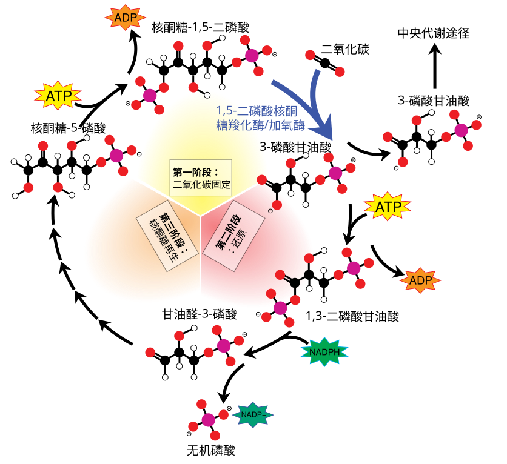

光合作用与光合呼吸综合
光合作用
光合作用概述
在现代农业的植物工厂中，人工光源通过精确调配红蓝光比例，为植物提供源源不断的能量；而在自然界，则是“万物生长靠太阳”。太阳光能的输入、捕获和转化，是生物圈得以维持运转的动力源泉。光合作用（Photosynthesis）作为地球上唯一能大规模捕获并转化光能的生物学途径，被誉为“地球上最重要的化学反应”。

植物捕获光能高度依赖特定的物质与结构。叶绿体（Chloroplast）是光合作用的场所，其内部由类囊体堆叠而成的基粒极大扩展了膜面积，为光合色素和酶提供了广阔的附着空间。分布在类囊体薄膜上的叶绿素（主要吸收红光和蓝紫光）与类胡萝卜素（主要吸收蓝紫光）构成光系统，如同灵敏的“天线”捕获光子。镁（Mg）作为叶绿素分子的核心元素，其供应充足与否直接决定了光能捕获的效率。
光合作用是一个精密的氧化还原过程，主要分为两个耦合的阶段：
- 光反应（类囊体膜）：色素捕获光能并转化为电能，通过水的光解释放 \ce{O2}，并产生活跃的化学能储存在 \ce{ATP} 和 \ce{NADPH} 中。
- 暗反应/碳反应（叶绿体基质）：利用光反应提供的能量和还原力，通过卡尔文循环将 \ce{CO2} 固定并还原为糖类等有机物，实现能量从活跃态向稳定态的跨越。
根据电子供体和产物的不同，光合作用可分为两类：
- 产氧光合作用：绝大多数绿色植物、藻类和蓝细菌利用水作为电子供体并释放氧气。
- 不产氧光合作用：这是一类更古老的代谢方式。绿硫细菌和紫硫细菌等不以水为电子供体，而是利用硫化氢（\ce{H2S}）或氢气（\ce{H2}），释放硫单质（\ce{S}）而非氧气。其反应式可表示为：
\ce{CO2 + 2H2S ->[光能] (CH2O) + 2S + H2O}
光合作用强度（单位时间内制造有机物的量）直接决定农作物产量。其速率受内外因素共同调控：
- 外部因素：光照强度（影响光反应）、\ce{CO2} 浓度（影响暗反应原料）、温度（影响酶活性）以及水分和矿质营养。在夏季中午，由于强光和高温导致蒸腾过旺，植物为保水而关闭气孔，会引发 \ce{CO2} 供应不足的“光合午休”现象。
- 内部因素：包括叶龄、色素含量及酶的活性。
在深海热泉或极度黑暗的洞穴中，存在着另一类自养生物，它们不依赖阳光，而是通过化能合成作用（Chemosynthesis）生存。它们利用体外环境中的无机物（如 \ce{NH3}、\ce{H2S}、\ce{Fe^{2+}}）氧化时释放的化学能，将 \ce{CO2} 和 \ce{H2O} 合成有机物。
- 硝化细菌：能将土壤中的氨氧化为亚硝酸和硝酸，释放的能量用于固定 \ce{CO2}，在氮循环中扮演关键角色。
- 产甲烷古菌：作为极其古老的生物，它们利用 \ce{H2} 还原 \ce{CO2} 产生甲烷，展现了早期地球生命的代谢原貌。
光合作用与化能合成作用不仅是生物圈的物质与能量源泉，更是大气环境的重塑者。约 23 亿年前产氧光合生物的出现，引发了“氧气大毁灭”并最终催生了需氧生物的繁衍和复杂生命的演化。
在现代生物技术领域，这些原理被广泛应用：
- 设施农业：通过增施“气肥”（\ce{CO2}）、调节昼夜温差和精准补光（红蓝 LED）来显著提升作物产量。
- 人工光合作用：我国科学家已实现在实验室中将 \ce{CO2} 直接人工合成淀粉，这一突破有望节约大量耕地和淡水资源，提升粮食安全。
- 环境修复：利用嗜极化能合成细菌降解原油污染或富集重金属，展示了生命极强的环境适应性与治理潜力。
综上所述，从微观的类囊体薄膜到宏观的全球碳氧平衡，光合作用与化能合成作用不仅是生命的代谢基础，更是人类通向可持续未来科技的关键钥匙。
叶绿素与叶绿体
叶绿体（Chloroplast）和叶绿素（Chlorophyll）是绿色植物进行光合作用的核心结构与物质基础。叶绿体被誉为植物细胞的“养料制造车间”和“能量转换站”，而叶绿素则是捕获光能的关键色素。
叶绿体是质体的一种，主要分布在绿色植物的叶肉细胞中。
- 形态与分布：在光学显微镜下，叶绿体通常呈扁平的椭球形或球形。它的分布受光照影响，在弱光下会以椭球形的正面朝向光源以最大化吸收光能；而在强光下则以侧面朝向光源，避免被灼伤。
- 精细结构：由双层膜（外膜和内膜）包被，内部充满基质（Stroma）。基质中悬浮着由单层膜围成的扁平囊状结构——类囊体（Thylakoids）。类囊体叠集成基粒（Grana），极大地扩展了膜面积，有利于光合色素和相关酶的附着。
- 半自主性：叶绿体含有少量的 DNA、RNA 和核糖体，能够合成一部分自身所需的蛋白质，在遗传上具有一定的自主性。
- 演化起源：内共生学说认为，叶绿体起源于古代真核细胞吞噬的蓝细菌（光合细菌）。
叶绿素是类囊体薄膜上最主要的色素，约占光合色素总量的 3/4。
- 主要类型：高等植物主要含有叶绿素 a（蓝绿色）和叶绿素 b（黄绿色）。此外，在蓝细菌等原核生物中还存在原叶绿素和细菌叶绿素。
- 分子结构：叶绿素分子包含一个含有镁原子（Mg²⁺）的卟啉环和一个长链的叶绿醇侧链。镁是合成叶绿素的必需元素，缺镁会导致叶片发黄（失绿症）。
- 光谱吸收：叶绿素主要吸收蓝紫光和红光，而对绿光的吸收极少。绿光被反射或透过，因此叶片呈现绿色。
- 合成条件：叶绿素的形成需要光照（黑暗中长成的幼苗会发黄，即“黄化现象”）和适宜的温度（低温会破坏叶绿素分子）。
叶绿素和辅助色素（类胡萝卜素）共同构成光系统（Photosystem）。
- 天线色素（捕光复合物）：绝大多数叶绿素分子和类胡萝卜素作为“天线”，负责吸收光能并通过共振能量转移（激子转移）将能量传递给反应中心。
- 反应中心：极少数处于特殊状态的叶绿素 a 分子（如 P680 和 P700）构成了光反应的中心。
- 电荷分离：这些特殊的叶绿素 a 受激后释放高能电子，实现光能向电能的转化。失去电子的叶绿素分子随后从水中夺取电子（水的光解），并释放出氧气。
实验研究与应用：
- 提取与分离：利用无水乙醇（或丙酮）提取光合色素。研磨时加入 \ce{CaCO3} 是为了中和有机酸，保护叶绿素不被酸破坏（脱镁）。通过纸层析法分离色素，在滤纸条上自上而下的顺序依次是：胡萝卜素（最快、最窄）、叶黄素、叶绿素 a（最宽）、叶绿素 b。
- 农业应用：由于光合色素对红光和蓝紫光吸收效率最高，人工补光时常选用红蓝 LED 灯。
- 海洋分布：海洋中绿藻、褐藻、红藻的垂直分层（浅、中、深）与不同波长光在海水中的穿透力及色素的吸收特性密切相关。
光合作用探究历史
人类对光合作用的理解历程跨越了近四个世纪，从最初对植物物质来源的宏观观察，逐步深入到分子水平的能量转换机制。这一探索过程不仅是生物学知识的积累，更是科学探究方法（如定量分析、对照实验、同位素示踪等）不断革新的体现。
第一阶段，物质来源的早期探索（17 世纪 — 18 世纪），这一时期的核心问题是：植物是如何长大的？它们与空气和水有何关系？
| 时间 | 人物 | 实验概述 | 实验妙处与科学逻辑 | 原因与意义 |
|---|---|---|---|---|
| 1642年 | 范·海尔蒙特 | 柳树实验：将 \pu{2.3 kg} 柳树种在 \pu{90 kg} 干燥土壤中，5 年内只浇雨水，柳树增重 \pu{74.4 kg}，土壤仅减重 \pu{0.06 kg}。 | 首创定量研究法：通过精确称重对比，挑战了“植物营养全来自土中”的传统定论。 | 证明植物生长所需物质并非主要来自土壤。虽然他错误地认为增重全来自水，但开启了实验生物学先河。 |
| 1771年 | 普里斯特利 | 钟罩实验：将点燃的蜡烛、小鼠分别与绿色植物同置于密闭玻璃罩内，发现有植物时蜡烛不熄灭，小鼠不窒息。 | 巧用生物指示剂：利用小鼠的生存状况和火焰燃烧直观展示气体的“净化”现象。 | 发现植物能够“更新”由于呼吸或燃烧而变得污浊的空气。 |
| 1779年 | 英格豪斯 | 在普里斯特利基础上进行了500多次重复实验，发现植物只有在光照下才能净化空气。 | 细分变量：通过设置“有光”与“无光”的对照，找出了前人实验有时失败的关键原因。 | 明确了光合作用的两个必要条件：光照和绿叶。 |
| 1804年 | 索绪尔 | 通过定量研究发现，植物产生的氧气和有机物总量大于消耗的二氧化碳总量。 | 定量化思维：引入了质量平衡的概念，精确测量气体消耗与产量的关系。 | 证实了水和二氧化碳都是植物生长的原料。 |
第二阶段，能量转化与反应场所的确立（19 世纪），这一时期，科学家开始关注能量的去向以及光合作用在细胞内的具体位置。
| 时间 | 人物 | 实验概述 | 实验妙处与科学逻辑 | 原因与意义 |
|---|---|---|---|---|
| 1845年 | 迈尔 | 基于能量守恒定律进行理论推导，认为植物将太阳能转换为了化学能。 | 跨学科视角：将物理学定律引入生物学分析，不再局限于物质增减。 | 阐明了光合作用的本质是能量转换。 |
| 1864年 | 萨克斯 | 遮光实验：天竺葵叶片先暗处理，再一半曝光一半遮光，用碘蒸气处理，曝光处变深蓝色，遮光处不变色。 | 自身对照与显色反应：利用“半叶法”排除干扰，巧妙利用淀粉遇碘变蓝的特性作为检测指标。 | 证明光合作用的产物有淀粉，且光是必要条件。 |
| 1880年 | 恩格尔曼 | 水绵实验：用极细光束照射载有水绵和需氧细菌的装片；或用透过三棱镜的各色光照射。 | 选材与检测指标极佳：水绵有螺旋带状叶绿体，易观察；需氧细菌是天然的“氧气探测器”，将不可见氧气可视化。 | 直接证明了叶绿体是光合作用的场所，并发现红光和蓝紫光效率最高。 |
第三阶段，分子机制与微观路径的解析（20 世纪至今），依靠同位素示踪等技术，科学家彻底查明了原子的来龙去脉和化学能的产生机制。
| 时间 | 人物 | 实验概述 | 实验妙处与科学逻辑 | 原因与意义 |
|---|---|---|---|---|
| 20 世纪初 | 伯莱克曼 | 测定不同光强和温度下的光合速率，推论出反应分为两个阶段。 | 多因素分析：通过限制因素的变化推导出反应存在依赖光和不依赖光的步骤。 | 提出了光反应和暗反应（碳反应）的概念。 |
| 1937 年 | 希尔 | 希尔反应：离体叶绿体悬浮液中加入氧化剂（铁盐），光照下产生氧气，但无糖生成。 | 组分还原法：证明在没有 \ce{CO2} 的情况下也能释放 \ce{O2}，说明水的光解是独立过程。 | 证明氧气的产生与糖的合成是相对独立的阶段。 |
| 1941 年 | 鲁宾和卡门 | \ce{^{18}O} 示踪实验：分别用 \ce{^{18}O} 标记 \ce{H2O} 和 \ce{CO2} 供给小球藻，发现只有提供 \ce{H2^{18}O} 的一组产生 \ce{^{18}O2}。 | 同位素对比实验：设置两组平行对照，排除氧原子在不同分子间随机转移的可能性。 | 确证光合作用释放的 氧气全部来自水，而非二氧化碳。 |
| 1945-1957 年 | 卡尔文 | \ce{^{14}C} 示踪实验：给小球藻提供 \ce{^{14}CO2}，在不同时间采样杀死细胞，分析产物。 | 原子追踪技术：结合双向纸层析和放射自显影，像安装“GPS”一样实时捕捉碳原子的转移。 | 探明了 \ce{CO2} 转化为有机物的具体路径，即卡尔文循环。 |
| 1954/1961 年 | 阿尔农/米切尔 | 阿尔农发现叶绿体能合成 \ce{ATP}；米切尔提出化学渗透假说。 | 跨学科物理建模：米切尔将膜内外的质子梯度比作驱动“微型发电机”的动力。 | 解释了光反应中太阳能如何通过跨膜电化学梯度转化为\ce{ATP} 中的化学能。 |
| 2018 年 | - | 研究发现蓝藻在阴暗环境下可利用“叶绿素 f”吸收近红外光进行光合作用。 | 极限环境探索：打破了光合作用只能利用可见光的教条。 | 为改良作物光能利用率和寻找外星生命提供了新思路。 |
光合作用的研究史反映了科学认知从宏观表象（植物重了、空气好了）到微观过程（原子转移、电子传递）的演进规律。每一次重大突破都依赖于工具的革新：从简单的称重器到显微镜，再到同位素检测仪和高能射线分析技术。
光反应概述
光合作用的光反应阶段是生命捕获并转化太阳能的关键起点。在类囊体薄膜这一微小的结构上，自然界上演了地球上最壮丽的能量跨越。以下是基于科学史实与分子机理的光反应深度梳理，旨在夯实基础并辅助理解。
光合作用分为光反应和碳反应（暗反应）两个阶段，二者通过物质与能量的交换紧密耦合。
- 场所：叶绿体的类囊体薄膜上。
- 条件：必须有光，且依赖光合色素和多种酶。
- 物质转化：将水分解为 \ce{O2} 和 \ce{H+}，并将 \ce{NADP+} 还原为 \ce{NADPH}。
- 能量转化：将捕获的太阳光能转化为储存在 \ce{ATP} 和 \ce{NADPH} 中的活跃化学能。
通过历史的棱镜，我们可以清晰地看到人类是如何逐步拆解光反应奥秘的：
- 希尔反应（1937 年）：打破“氧气来自 \ce{CO2}”的旧观念
- 实验设计：希尔将离体的叶绿体悬浮液中加入铁盐（如 \ce{Fe^{3+}}）作为电子受体，在光照下观察到了 \ce{O2} 的释放，而此过程中并未提供 \ce{CO2}。
- 核心贡献：证明了水的光解可以独立于 \ce{CO2} 的固定而发生。铁盐在实验中充当了人造的“电子受体”，其功能在活细胞中由 \ce{NADP+} 承担。
- 鲁宾和卡门实验（1941 年）：确证氧气的来源
- 实验技术：利用同位素标记法，分别标记了 \ce{H2O} 和 \ce{CO2} 中的氧原子。
- 实验结果：提供 \ce{H2^{18}O} 和 \ce{CO2} 的组别释放出 \ce{^{18}O2}；而提供 \ce{H2O} 和 \ce{C^{18}O2} 的组别释放出的是未标记的 \ce{O2}。
- 结论：光合作用释放的 \ce{O2} 全部来自水。
- 阿尔农实验（1954、1957 年）：发现能量的转化装置
- 重大发现：他观察到在光照下，离体叶绿体只要供给 \ce{ADP}、\ce{Pi} 和 \ce{NADP+}，就能合成 \ce{ATP} 和 \ce{NADPH}，且这一过程与水的光解相伴随。
- 意义：这标志着人们认识到光能被转换成了活跃的化学能，确立了“光合磷酸化”的概念。
在类囊体薄膜上，两个光系统（PSII 和 PSI）如接力赛般传递电子，这被称为 Z 字形路径：
水的光解（发生在光系统 II，PSII）：光合色素（主要为叶绿素 a）捕获光能并汇集到反应中心（\ce{P680}），激发出的高能电子弹入电子传递链。失去电子的叶绿素 a 具有极强的氧化性，从水中“夺取”电子以恢复状态，从而将水裂解为 \ce{O2}、\ce{H+} 和电子。
电子传递与质子泵送：电子在传递链（质体醌、细胞色素 b_6f、质体蓝素）中流动，释放的能量驱动质子泵将 \ce{H+} 从基质泵入类囊体腔，形成跨膜的电化学质子梯度。
能量的最终产出：
- ATP 的合成：类囊体腔内的高浓度 \ce{H+} 顺浓度梯度经 \ce{ATP} 合酶 流回基质，驱动 \ce{ADP} 和 \ce{Pi} 合成 \ce{ATP}。
- \ce{NADPH} 的生成：电子到达光系统 I（PSI，\ce{P700}）后再次被光能激发，最终交给 \ce{NADP+} 和基质中的 \ce{H+}，结合生成 \ce{NADPH}。
为了防止混淆光合作用与呼吸作用的辅酶，可以使用以下方法夯实记忆：
| 特性 | NADPH (辅酶 II) | NADH (辅酶 I) |
|---|---|---|
| 记忆字母 P | P 代表 Photosynthesis（光合作用） | 无（对应呼吸作用） |
| 主要领域 | 合成代谢（如暗反应合成糖） | 分解代谢（如呼吸作用分解糖） |
| 细胞比率 | \ce{NADP+} / \ce{NADPH} 比例低（利于还原） | \ce{NAD+} / \ce{NADH} 比例高（利于氧化） |
| 功能定位 | 活跃的“还原剂”与“能量载体” | 呼吸链电子传递的“供体” |
为什么课本把二者都记作 [\ce{H}]？在基础教学中，[\ce{H}] 是对还原型辅酶的统称，用来简化丙酮酸还原或 \ce{C3} 还原的描述。但在大学及更深层次的生物学中，必须明确：光合产生的还原力是 \ce{NADPH}，而有氧呼吸过程中产生的是 \ce{NADH}。
记忆窍门：
- 辅酶 II 比 I 多了一个“P”（磷酸基团），既然“II”数字大，它的“装备（P）”就更多。
- \ce{NADPH} 是光反应送给暗反应的“能量礼包”，而 \ce{NADH} 是呼吸作用里拆解食物后的“电子载体”。
总结来说，光反应不仅是 \ce{O2} 的源头，更是将“虚幻”的光能固化为“实体”化学能的精密生产线。掌握了希尔、鲁宾和卡门的实验逻辑，以及 Z 字形电子流动的方向，便抓住了光合作用的核心灵魂。
暗反应概述
光合作用的第二个阶段——碳反应阶段（Carbon Reaction Stage），不仅是生命体构建有机大分子的“装配线”，更是地球化学能量转化的终点站。通过对科学史、分子机制以及演化策略的深度解析，我们可以更清晰地理解这一过程。
在传统教材中，这一阶段常被称为“暗反应”，但这一术语极具误导性，因为它并不只在黑暗中发生，甚至在黑暗中很快就会停止。
- 严谨命名：现代学术界倾向于使用“碳反应”或“碳同化反应”。
- 光依赖性：虽然它不需要光子直接激发，但必须依赖光反应提供的 \ce{ATP}（能量）和 \ce{NADPH}（还原力）。一旦失去光照，由于这两种物质的供应耗尽，碳反应会迅速停止。
- 反应场所：发生在叶绿体的基质中，这里含有固定 \ce{CO2} 所需的全套酶系。
20 世纪 40 年代，卡尔文（M. Calvin）团队通过小球藻（单细胞绿藻）实验，揭开了碳原子的行踪。
- 实验技术：利用同位素标记法（使用 \ce{^{14}CO2}）配合双向纸层析和放射自显影技术。
- 核心逻辑：通过不断缩短光照时间并迅速用热乙醇杀死细胞（使酶失活），卡尔文发现标记原子首先出现在一种三碳化合物中，从而探明了著名的卡尔文循环。
碳反应是一个周而复始的循环，每固定 3 分子 \ce{CO2}，可产出 1 分子三碳糖（G3P），整个过程分为三个阶段：
- \ce{CO2} 的固定（羧化阶段）：外界吸收的 \ce{CO2} 与一种五碳化合物 \ce{RuBP}（\ce{C5}）结合。在地球上含量最丰富的酶——Rubisco（核酮糖二磷酸羧化酶/加氧酶）催化下，生成不稳定的六碳中间体，随后裂解为两分子的 三碳化合物 \ce{C3}（3-磷酸甘油酸）。
- \ce{C3} 的还原（能量固化）：\ce{C3} 接受光反应提供的 \ce{ATP} 能量，并被 \ce{NADPH} 还原，最终形成三碳糖（磷酸甘油醛）。这是光能正式转化为有机物中稳定化学能的关键时刻。
- \ce{RuBP} 的再生（循环闭环）：为了使循环持续，部分三碳糖在 \ce{ATP} 的驱动下，经过复杂的骨架重排，重新再生为 \ce{C5}，以迎接下一分子 \ce{CO2}。
为了适应不同的极端环境，植物演化出了三种截然不同的固碳“流派”：
| 类型 | 核心策略与特点 | 代表植物 | 适应环境 | 优势与局限 |
|---|---|---|---|---|
| \ce{C3} 植物 | 直接进行卡尔文循环，\ce{CO2} 固定最初产物是三碳酸。 | 水稻、小麦 | 温带、湿润 | 结构简单，但在高温下易发生“光呼吸”损耗。 |
| \ce{C4} 植物 | 空间分离：由叶肉细胞作为“\ce{CO2} 泵”收集碳，在维管束鞘细胞中浓缩并进行循环。 | 玉米、甘蔗 | 热带、高温 | 克服了低浓度 \ce{CO2} 限制，无“光合午休”现象。 |
| CAM 植物 | 时间分离：夜间开启气孔吸收 \ce{CO2} 储存在有机酸中，白天关闭气孔以节水并释放 \ce{CO2} 固碳。 | 仙人掌、芦荟 | 极端干旱 | 极高的水分利用率，但由于需跨昼夜储存，生长速度较慢。 |
真核藻类与蓝细菌：均含有叶绿素，进行产氧光合作用。蓝细菌虽无叶绿体，但其光合片层具备类似功能。
不产氧光合细菌：如紫硫细菌。它们不以水为电子供体（不释放 \ce{O2}），而是利用硫化氢（\ce{H2S}）等，释放硫单质。这反映了地球早期生命在无氧环境下的生存原貌。
碳反应不仅是植物制造淀粉和蔗糖的过程，它产生的有机物还运往非光合器官（如根、果实），支撑着整株植物的生长。从微观的酶促反应到宏观的全球碳氧平衡，碳反应将无机的工业气体固化为生机勃勃的有机世界，是生物圈得以维持运转的物质基础。
光合产物的最终形成及其运输
光合产物的形成与运输是植物维持生命活动、实现物质循环和能量流动的核心过程。这一过程始于叶绿体基质中的碳固定，最终通过韧皮部的精密运输系统分配至植株全身。以下是详细的讲解：
光合作用的产物并非直接生成葡萄糖，其最初的稳定中间产物是三碳糖磷酸（G3P，又称3-磷酸甘油醛）。
- 二氧化碳的固定（羧化阶段）：在叶绿体基质中，1分子CO_2与1分子五碳化合物（RuBP）在Rubisco酶的催化下结合，生成1个不稳定的六碳中间体，随即分解为2分子三碳化合物（3-PGA）。
- C3的还原（还原阶段）：3-PGA接受光反应提供的ATP（提供能量）和NADPH（提供还原力和能量），被还原为三碳糖磷酸（G3P）。
- 循环与净输出：每固定3分子CO_2，循环产生6分子G3P，其中5分子留在循环中再生为RuBP，只有1分子G3P作为净产物输出，用于合成其他有机物。合成1分子葡萄糖（六碳糖）需要固定6分子CO_2，并消耗18分子ATP和12分子NADPH。
输出卡尔文循环的G3P会根据细胞的需求，在不同部位转化成不同的最终形式：
- 临时储存：淀粉（Starch）
- 合成位置：叶绿体基质。
- 性质与作用：淀粉是葡萄糖的长链聚合物，不溶于水，作为光合作用的临时储备物质。在白天光合作用强时积累，夜间则水解为糖，为植物呼吸作用提供燃料。
- 长距离运输：蔗糖（Sucrose）
- 合成位置：细胞质基质。
- 转运机制：叶绿体基质中的三碳糖磷酸通过内膜上的反向转运蛋白进入细胞质基质，同时将无机磷酸（P_i）转运进叶绿体，用于光反应生成ATP。
- 优点：蔗糖是非还原糖，性质稳定，且具有较高的水溶性和运输速率，对渗透压的影响相对较小，是植物体内长距离运输的主要形式。
光合产物通过韧皮部的筛管（Sieve-tube elements）由“源”运往“库”。
- 源与库的概念：
- 源（Source）：制造并输出有机物的部位，主要是成熟的叶片。
- 库（Sink）：消耗或储存有机物的部位，如根、茎尖、果实和正在发育的种子。
- 蔗糖的装载（Active Loading）：
- 叶肉细胞合成的蔗糖通过胞间连丝进入伴胞，随后通过细胞膜上的蔗糖-H+共转运蛋白（Sucrose-H+ Symporter）主动运输进入筛管。
- 这一过程由H+-ATP酶（质子泵）消耗ATP建立的H^+电化学梯度驱动，属于间接消耗能量的主动运输。
- 压流假说（Pressure-Flow Hypothesis）：
- 动力产生：蔗糖主动进入源端的筛管后，溶质浓度升高，降低了水势，吸引相邻木质部中的水分通过渗透作用进入筛管，从而产生很高的膨压（流体静压力）。
- 定向流动：在库端，蔗糖通过扩散或主动转运从筛管卸出（Unloading），水分随之离开筛管流回木质部，导致库端压力降低。
- 结果：源端与库端之间的压力差驱动韧皮部汁液（含高达30%的糖）进行大批量流动（Bulk Flow），将有机养分定向送达需求部位。
运输调节及其意义：
- 调节作用：蔗糖的运输速率受源端产量和库端需求共同调节。若产物（蔗糖/淀粉）在叶片中过度积累（卸载受阻），会通过负反馈机制抑制RuBisCO酶的活性，从而降低光合速率。
- 生物学意义：这种高效的运输系统确保了非光合组织（如根部）能获得足够的能量进行主动吸收和生长，并使植物能在特定季节将能量从储藏器官（如块茎）调动至生长点。
光合作用提高
化学渗透学说
化学渗透学说（Chemiosmotic Hypothesis）由英国生物化学家彼得·米切尔（Peter Mitchell）于 1961 年提出，用于解释细胞如何将底物氧化或阳光的能量转化成 \ce{ATP} 的键能。这一理论现已被广泛接受，成为生物能学中具有巨大统一效力的基本原理，解释了氧化磷酸化（在线粒体中）和光合磷酸化（在叶绿体中）的能量偶联机制。
化学渗透学说的核心逻辑可以类比为“水力发电”：电子传递释放的能量被用来建立一个跨膜的“水坝”（质子梯度），而质子流回时通过“发电机”（\ce{ATP} 合酶）产生能量。该过程分为以下关键步骤：
- 电子传递与质子泵送：在线粒体内膜或类囊体薄膜上，高能电子通过一系列膜结合载体（电子传递链）向下坡方向流动。在此过程中释放的自由能驱动跨膜蛋白（质子泵）将质子（\ce{H+}）从膜的一侧泵送到另一侧。
- 电化学梯度的形成：由于膜对质子具有不透性，质子在膜的一侧（如线粒体膜间隙或类囊体腔）积累，形成了跨膜电化学质子梯度。这种梯度包含两种势能：
- 化学势能：膜两侧的 \ce{H+} 浓度差（\Delta pH）。
- 电势能：电荷分离产生的跨膜电位差（\Delta \psi）。这两者合称为质子动力（Proton-motive force）。
- 质子回流与 \ce{ATP} 合成：积累的质子具有顺着电化学梯度流回膜另一侧的强烈趋势。它们只能通过膜上唯一的专用通道——\ce{ATP} 合酶（\ce{ATP} synthase）回流。质子流经 \ce{ATP} 合酶产生的动力驱动该酶合成 \ce{ATP}。
ATP 合酶是化学渗透偶联的中心酶，其结构和功能如同一个精密的分子马达：
- 结构：主要由嵌入膜内的 F_0 部分（负责质子转运）和突出于膜外的 F_1 部分（负责催化）组成。
- 旋转催化机制：根据保罗·博耶（Paul Boyer）提出的结合变化模型，质子流过 F_0 引起酶的转子（柄部）旋转。随着旋转， F_1 上的三个催化位点依次经历三种构象变化（开放、松散、紧密），从而将 \ce{ADP} 和无机磷酸（P_i）压缩合成 \ce{ATP} 并释放。
- 可逆性：\ce{ATP} 合酶是一个可逆装置。当质子梯度足够强时，它合成 \ce{ATP}；当梯度消失时，它也可以通过水解 \ce{ATP} 来泵送质子以重建梯度。
| 特征 | 氧化磷酸化（线粒体） | 光合磷酸化（叶绿体） |
|---|---|---|
| 能量来源 | 有机物氧化（\ce{NADH}，\ce{FADH2}） | 太阳光能 |
| 质子积累部位 | 内膜与外膜之间的膜间隙 | 类囊体腔 |
| \ce{ATP} 合成部位 | 线粒体基质侧 | 叶绿体基质侧 |
| 最终受体 | 氧气（\ce{O2}）还原生成水 | \ce{NADP+} 还原生成 \ce{NADPH} |
- Jagendorf 实验（1966 年）：证明了在黑暗中，通过人为制造跨类囊体膜的 pH 梯度（将叶绿体从 pH 4 环境移至 pH 8 环境），足以驱动 \ce{ATP} 的合成，有力地支持了该假说。
- 解偶联剂的作用：某些化学物质（如2,4-二硝基苯酚/DNP）能增加膜对质子的通透性，使质子不经过 \ce{ATP} 合酶就漏回，从而消除质子梯度。结果是电子传递继续（甚至加快），但 \ce{ATP} 合成停止，能量以热能形式散失。
- 意义：该理论解释了生物体如何高效利用能量。氧化能量转化成 \ce{ATP} 键能的效率通常超过\pu{40 \%}，远优于大多数人造机器。此外，产生的质子梯度还被用于驱动溶质的主动转运（如丙酮酸、磷酸进入线粒体）和细菌鞭毛的运动。
电子传递链
电子传递链（ETC）是生物体能量转换的核心机制，通过一系列膜结合载体有序传递电子，释放的能量用于建立质子梯度，最终驱动 \ce{ATP} 的合成。这一过程在叶绿体中称为光合磷酸化，在线粒体中称为氧化磷酸化，两者均遵循彼得·米切尔提出的化学渗透学说。
氧化磷酸化发生在线粒体内膜上，通过氧化有机物释放的能量来产生 \ce{ATP}。
- 电子来源与初始载体：
- 电子主要来源于糖酵解、丙酮酸氧化和三羧酸循环（TCA）产生的 \ce{NADH} 和 \ce{FADH2}。
- \ce{NADH} 将电子传递给复合体 I（NADH 脱氢酶），而 \ce{FADH2} 的电子通过复合体 II（琥珀酸脱氢酶）进入链中。
- 传递途径与四大复合体：
- 复合体 I → 泛醌 (Q) → 复合体 III → 细胞色素 c → 复合体 IV → \ce{O2}。
- 复合体 I、III、IV 在传递电子的同时，利用释放的能量将质子（\ce{H+}）从线粒体基质泵入膜间隙。
- 最终电子受体：氧气（\ce{O2}）在复合体 IV 处接受电子和质子生成水（\ce{H2O}）。
- 能量账单（P/O 比）：
- 每对来自 \ce{NADH} 的电子通过链可泵出 10 个 \ce{H+}，理论上产生约 2.5 个 \ce{ATP}。
- 每对来自 \ce{FADH2} 的电子绕过复合体 I，仅泵出 6 个 \ce{H+}，产生约 1.5 个 \ce{ATP}。
光合磷酸化发生在叶绿体的类囊体薄膜上，利用光能驱动电子从低电势的水流向高电势的 \ce{NADP+}。
- 非循环电子传递（Z 方案）：
- 光系统 II (PSII/\ce{P680})：吸收光能激发电子，失去电子的 \ce{P680} 变成强氧化剂，诱导水的光解（\ce{2H2O -> 4H+ + 4e- + O2}），释放出 \ce{O2} 并产生质子。
- 电子链：电子经质体醌 (PQ)、细胞色素 b_6f 复合体和质体蓝素 (PC) 传递。
- 光系统 I (PSI/\ce{P700})：电子再次被光能激发，通过铁氧还蛋白 (Fd) 最终传递给 \ce{NADP+}，生成 \ce{NADPH}。
- 最终电子受体：\ce{NADP+} 是光反应电子传递的终点。
- 循环电子传递：
- 当细胞需要更多 \ce{ATP} 而非 \ce{NADPH} 时，PSI 激发的电子不传给 \ce{NADP+}，而是回到细胞色素 b_6f 复合体进行循环流动。
- 该过程不产生 \ce{NADPH} 和 \ce{O2}，仅用于建立质子梯度以合成 \ce{ATP}。
- 质子梯度的建立：
- 质子通过水的光解（在类囊体腔中释放）和细胞色素 b_6f 复合体的泵送，积聚在类囊体腔内。
尽管能量来源和最终受体不同，但两者合成 \ce{ATP} 的精密机制是完全相同的：
- 质子动力势（PMF）：电子传递释放的能量被转化为跨膜的电化学梯度（质子浓度差和电位差）。
- \ce{ATP} 合酶（分子马达）：积累的质子顺浓度梯度通过 \ce{ATP} 合酶（F_0F_1 复合体）流回（线粒体基质或叶绿体基质）。
- 旋转催化：质子流驱动合酶的“转子”旋转，改变催化位点的构象，将 \ce{ADP} 和 \ce{Pi} 合成为 \ce{ATP}。
| 特征 | 氧化磷酸化（线粒体） | 光合磷酸化（叶绿体） |
|---|---|---|
| 能量来源 | 有机物氧化（\ce{NADH}，\ce{FADH2}） | 太阳光能（光子） |
| 最终电子受体 | 氧气（\ce{O2}）生成水 | \ce{NADP+} 生成 \ce{NADPH} |
| 电子供体 | 有机物（如葡萄糖分解产物） | 水（\ce{H2O}）光解提供电子 |
| 质子积累部位 | 线粒体膜间隙 | 叶绿体类囊体腔 |
| 能量转换过程 | 化学能 → 电位能 → \ce{ATP} 化学能 | 光能 → 电能 → 活跃化学能 |
卡尔文循环
卡尔文循环（Calvin cycle），也称为光合碳还原循环或暗反应阶段（现多称为碳反应），是光合作用中将二氧化碳（\ce{CO2}）转化为糖类的核心生化路径。该循环发生在叶绿体的基质中，利用光反应阶段产生的活跃化学能（\ce{ATP} 和 \ce{NADPH}）来固定和还原 \ce{CO2}。
{kind=link}

卡尔文循环由美国生物化学家梅尔文·卡尔文（Melvin Calvin）及其团队在 20 世纪 40 年代末至 50 年代初发现。
- 实验设计：他们向含有小球藻（一种单细胞绿藻）的容器中通入 \ce{^{14}C} 标记的 \ce{CO2}。
- 示踪技术：通过控制光照时间（甚至缩短至几秒）并迅速用热乙醇杀死细胞使酶失活，利用双向纸层析法和放射自显影技术，他们追踪到了放射性碳原子依次出现的化合物，从而探明了碳的转移途径。卡尔文因此获得了 1961 年诺贝尔化学奖。
卡尔文循环是一个连续的过程，为了方便理解，通常将其分为三个阶段：二氧化碳的固定、还原和受体（RuBP）的再生。
- 二氧化碳的固定（羧化反应）
- 过程：每一分子 \ce{CO2} 与一个五碳受体分子——核酮糖 -1,5-二磷酸（\ce{RuBP}，简称五碳糖）结合。
- 关键酶：此反应由核酮糖二磷酸羧化酶/加氧酶（简称 Rubisco）催化。Rubisco 是地球上含量最丰富的蛋白质之一。
- 产物：结合后形成一个不稳定的六碳中间产物，随后立即裂解为两分子的3-磷酸甘油酸（3-PGA，简称三碳酸或 \ce{C3}）。由于最初的固定产物是三碳化合物，这类植物被称为 \ce{C3} 植物。
- C_3 的还原
- 能量输入：该阶段是循环中消耗能量最多的步骤。\ce{C3} 分子首先接受来自 \ce{ATP} 的磷酸基团被激活，随后接受 \ce{NADPH} 提供的氢和电子（还原力）。
- 产物生成：C_3 被还原为甘油醛 -3-磷酸（G3P，也称三碳糖磷酸）。
- 产物去向：在每产生的 6 分子三碳糖中，只有 1 分子会离开循环，用于合成葡萄糖、淀粉（储存在叶绿体内）、蔗糖（运出叶绿体）或其他有机物。
- 五碳受体（\ce{RuBP}）的再生
- 碳素循环：剩余的 5 分子三碳糖（共 15 个碳原子）经过一系列复杂的酶促反应，重新排列碳骨架，再次生成 3 分子 \ce{RuBP}（共 15 个碳原子）。
- 能量消耗：再生过程还需要消耗额外的 \ce{ATP}。
为了生成 1 分子净产物（三碳糖），循环必须转动 3 圈（固定 3 分子 \ce{CO2}）。
- 总投入（生成 1 分子三碳糖）：3 \ce{CO2} + 9 \ce{ATP} + 6 \ce{NADPH}。
- 生成 1 分子葡萄糖：需要固定 6 分子 \ce{CO2}，消耗 18 分子 \ce{ATP} 和 12 分子 \ce{NADPH}。
调节机制与环境影响：
光激活：虽然被称为暗反应，但循环中的关键酶（如 Rubisco、5-磷酸核酮糖激酶等）在光照下通过硫氧还蛋白介导的二硫键还原而被激活，因此在黑暗中循环会很快停止。
光呼吸：Rubisco 具有双重活性。在低 \ce{CO2} 或高 \ce{O2} 环境下，它会催化 \ce{O2} 与 \ce{RuBP} 结合，导致已经固定的碳被氧化释放，这一过程称为光呼吸，它会降低光合效率。
环境骤变：
- 停止光照：\ce{ATP} 和 \ce{NADPH} 供应中断，\ce{C3} 还原受阻导致 \ce{C3} 含量上升；\ce{RuBP} 再生受阻导致 \ce{RuBP} 含量下降。
- 减少 \ce{CO2}：\ce{CO2} 固定减慢导致 \ce{C3} 含量下降；\ce{RuBP} 消耗减少导致 \ce{RuBP} 含量上升。
卡尔文循环是生物圈中绝大多数有机物的初始来源。它将大气中无机的 \ce{CO2} 转化为有机物中稳定的化学能，不仅为植物自身生长提供物质基础，也为几乎所有异养生物提供了食物和能量源头。
希尔反应
希尔反应（Hill reaction）是光合作用研究史上具有里程碑意义的发现。1937 年，英国科学家罗伯特·希尔（Robert Hill）通过实验证明了离体叶绿体在光照下可以产生氧气，这不仅揭示了水的光解过程，还证明了氧气的产生与二氧化碳的还原是两个可以分开进行的反应阶段。
在 20 世纪初，科学界曾普遍认为光合作用释放的 \ce{O2} 来自于 \ce{CO2} 的分解。希尔通过以下实验设计对此提出了挑战：
- 实验材料：离体的叶绿体悬浮液（含有水，但去除了 \ce{CO2}）。
- 反应条件：必须有光照。
- 关键添加物（希尔试剂）：加入了氧化剂（即人工电子受体），如高铁盐（如草酸铁、铁氰化钾）或氧化型二氯酚靛酚（DCPIP）。
实验现象与化学反应：
- 实验现象：在光照下，离体叶绿体悬浮液中有气泡（\ce{O2}）产生，同时加入的氧化剂被还原并发生颜色变化。
- 例如，铁盐中的 \ce{Fe^{3+}} 被还原为 \ce{Fe^{2+}}，溶液由黄色变为浅绿色。
- 例如，DCPIP由蓝色（氧化态）变为无色（还原态 \ce{DCPIPH2}）。
- 通用反应式：\ce{2H2O + 2A ->[光照、叶绿体] 2AH2 + O2}
- 其中 A 代表希尔试剂（人工电子受体）。
希尔反应的发现具有深远的科学意义：
证明了水的光解：实验直接证明了离体叶绿体在适当条件下能发生水的光解并产生 \ce{O2}。
证明了两个反应阶段的独立性：希尔反应是在没有 \ce{CO2} 的情况下进行的，这说明水的光解与糖的合成不是同一个化学反应，且水的光解不需要 \ce{CO2} 的参与。
揭示了电子流动机理：希尔反应提供了第一个证据，证明吸收的光能引起了电子从 \ce{H2O} 流向电子受体的过程。
建立了希尔试剂的概念：实验中的人工氧化剂（如铁盐、DCPIP）起到了捕捉氢和电子的作用，它们在实验中相当于光合作用自然过程中的 \ce{NADP+}。易错点辨析与深度理解：
关于氧气来源：虽然希尔反应说明了水光解产生氧气，但它并没有直接证明 \ce{O2} 中的氧原子全部来自水。确证氧气来自水是由鲁宾和卡门后续通过同位素标记法（\ce{^{18}O}）完成的。
是否产生 \ce{NADPH}：在标准的希尔反应（使用人工氧化剂如铁盐时）中，不产生 \ce{NADPH}，因为加入的人工氧化剂取代了 \ce{NADP+} 的位置。只有当反应体系中原本存在的或人为加入的是 \ce{NADP+} 时，才会产生 \ce{NADPH}。
与 \ce{ATP} 合成的关系：后来的研究（如阿尔农的实验）进一步发现，希尔反应所代表的水光解过程总是与 \ce{ATP} 的合成（光合磷酸化）相伴随的。
希尔反应常被用于测定叶绿体的光合活力。通过仪器测定 DCPIP 溶液的颜色变化速率或 \ce{O2} 的释放速率，可以量化希尔反应的强度，从而评估叶绿体的功能状态。
光系统
光合作用的光反应阶段发生在叶绿体的类囊体薄膜上，其核心是通过光系统 II (PSII) 和光系统 I (PSI) 的协同作用，将光能转化为活跃的化学能（\ce{ATP} 和 \ce{NADPH}）。
光系统是执行光能捕获和转化的基本单位，由复合物（天线色素）和反应中心两部分组成。
- 光系统 II (PSII)：
- 核心功能：吸收光能并利用其裂解水分子（水的光解），产生氧气、质子（\ce{H+}）和高能电子。
- 反应中心：包含一对特殊的叶绿素 a 分子，称为 \ce{P680}（因其在 680 nm 处有最大吸收峰而得名）。
- 电子流动：\ce{P680} 受光激发释放出高能电子，传递给原初电子受体。失去电子的 \ce{P680} 变成强氧化剂，从水分子的裂解中夺取电子以恢复稳定状态。
- 水裂解复合体：在 PSII 处，2 分子水被分解产生 1 分子 \ce{O2}、4 个 \ce{H+} 和 4 个电子。
- 光系统 I (PSI)：
- 核心功能：接收来自 PSII 传递链的电子，再次被光激发后，将电子传递给 \ce{NADP+}，生成还原型辅酶 II（\ce{NADPH}）。
- 反应中心：称为 \ce{P700}（最大吸收峰在 700 nm 处）。
- 电子接收：\ce{P700} 吸收光能后释放的高能电子最终流向 \ce{NADP+}，而其留下的“电子空洞”则由来自 PSII 电子传递链末端的低能电子填补。
非循环电子传递是光合作用中最主要的电子流向，其路径形似侧倒的字母“Z”，因此被称为 Z 方案 (Z-scheme)。
- 传递路径：水 → PSII (\ce{P680}) → 质体醌 (PQ) → 细胞色素 b_6f 复合体 → 质体蓝素 (PC) → PSI (\ce{P700}) → 铁氧还蛋白 (Fd) → \ce{NADP+}。
- 能量转化过程：
- 第一次激发：光能打击 PSII，电子从 \ce{P680} 跃迁。
- 质子泵送：电子在流经细胞色素 b_6f 复合体时，利用释放的能量将 \ce{H+} 从叶绿体基质泵入类囊体腔，建立跨膜质子梯度。
- 第二次激发：电子到达 PSI，再次吸收光能提升能级。
- 生成产物：高能电子最终还原 \ce{NADP+} 生成 \ce{NADPH}。同时，跨膜质子梯度驱动 \ce{ATP} 合酶合成 \ce{ATP}。
- 产物：该途径同时产生 \ce{ATP}、\ce{NADPH} 和 \ce{O2}。
当植物细胞对 \ce{ATP} 的需求超过 \ce{NADPH}（例如暗反应消耗较多 \ce{ATP} 时），光系统会切换到循环模式。
- 传递路径：电子从 PSI 的反应中心出发，传递给铁氧还蛋白 (Fd) 后，不再流向 \ce{NADP+}，而是回流到细胞色素 b_6f 复合体，经由质体蓝素 (PC) 再次回到 PSI (\ce{P700})。
- 核心特征：
- 仅涉及 PSI：电子在 PSI 内部循环流动。
- 只产生 \ce{ATP}：电子流经 b_6f 复合体时继续泵送质子以维持梯度，从而驱动 \ce{ATP} 合成。
- 不产生 \ce{NADPH} 和 \ce{O2}：因为不涉及水分子的光解，也不将电子交给 \ce{NADP+}。
- 意义：该途径允许植物灵活调节 \ce{ATP} 与 \ce{NADPH} 的产出比例，以适应不断变化的代谢需求。
为了防止光系统 I“偷走”原本应属于光系统 II 的光能（激子迁移），两者在类囊体膜上的分布并不均匀：
- PSII：主要分布在类囊体堆叠的基粒片层内。
- PSI 和 \ce{ATP} 合酶：主要分布在暴露于基质的基质片层和基粒片层的边缘，这样便于接触基质中的原料（如 \ce{NADP+} 和 \ce{ADP}）。
植物还能通过光捕获复合体 (LHCII) 的磷酸化与脱磷酸化来调节能量在两个系统间的分配。在强光下，LHCII 可能从 PSII 解离并移动到基质片层与 PSI 结合，从而平衡电子流。
光呼吸作用
光呼吸（Photorespiration）是所有使用卡尔文循环进行碳固定的细胞（如 \ce{C3} 植物）在光照下发生的一个复杂的生化过程。它表现为在光照、高氧低 \ce{CO2} 的情况下，绿色植物吸收 \ce{O2} 并释放 \ce{CO2}，该过程与光合作用同时发生。

光呼吸的核心源于光合作用的关键酶——Rubisco（核酮糖 -1,5-二磷酸羧化酶/加氧酶）。这种酶具有双重催化功能，其反应方向取决于胞内 \ce{CO2} 和 \ce{O2} 的相对浓度：
- 羧化反应（正常光合）：当 \ce{CO2} 浓度较高时，Rubisco 催化 \ce{C5}（\ce{RuBP}）与 \ce{CO2} 结合，生成 2 分子的 \ce{C3}（3-磷酸甘油酸），进入卡尔文循环合成糖类。
- 加氧反应（光呼吸起始）：当 \ce{O2} 浓度较高或 \ce{CO2} 浓度较低时（例如高温导致气孔关闭），\ce{O2} 会与 \ce{CO2} 竞争 Rubisco 的同一活性位点。此时，Rubisco 催化 \ce{C5} 与 \ce{O2} 结合，生成 1 分子 \ce{C3} 和 1 分子 \ce{C2}（磷酸乙醇酸）。
光呼吸产生的 \ce{C2} 化合物（磷酸乙醇酸）对植物来说是有毒且无法直接利用的。为了“回收”这些碳原子，植物演化出了一条涉及叶绿体、过氧化物酶体和线粒体三个细胞器协同工作的复杂代谢途径：
- 叶绿体：生成 \ce{C2} 化合物并脱磷酸形成乙醇酸。
- 过氧化物酶体：乙醇酸进入过氧化物酶体被氧化，产生过氧化氢（由过氧化氢酶分解）和乙醛酸，进而转化为甘氨酸。
- 线粒体：甘氨酸在线粒体中转化，释放出 \ce{CO2}，并将剩余的碳转化为丝氨酸运回。这是光呼吸释放二氧化碳的具体场所。
- 回收结果：最终，每 2 分子 \ce{C2} 损失 1 分子 \ce{CO2}，剩下的 3 个碳原子被重新回收形成 \ce{C3} 进入卡尔文循环。
{kind=link}
光呼吸通常被视为光合作用的一个“损耗能量的副反应”：
- 有机物减产：它消耗了原本用于固碳的 \ce{C5}，并将已固定的碳以 \ce{CO2} 的形式再次释放。
- 能量浪费：与细胞呼吸产生 \ce{ATP} 不同，光呼吸不仅不产生能量，反而是一个纯消耗 \ce{ATP} 和 \ce{NADPH} 的过程。
- 损耗比例：在正常条件下，光呼吸会损耗约 \pu{25 \sim 30 \%} 的光合产物；在高温干旱等逆境下，损耗比例可高达 \pu{50 \%}。
尽管光呼吸看似浪费，但在进化过程中被保留下来，说明它具有关键的保护作用：
- 防止光抑制（光保护作用）：在强光和干旱条件下，植物为了保水会关闭气孔，导致胞间 \ce{CO2} 匮乏。此时，光反应产生的多余 \ce{ATP} 和 \ce{NADPH} 会大量堆积，产生自由基（ROS）并损伤光系统 II（PSII）。光呼吸通过消耗这些过剩的能量和还原力，起到了“安全阀”的作用，保护光合机构免遭强光“烧坏”。
- 消除毒害与调节代谢：光呼吸有助于消除乙醇酸等中间产物的毒害，并作为氮代谢的补充途径。
- 维持卡尔文循环运转：在极低 \ce{CO2} 条件下，光呼吸释放的 \ce{CO2} 可以被重新利用，维持碳循环的低水平运转。
改造与适应：
农业改造：科学家尝试通过基因工程抑制光呼吸（如引入更高效的代谢支路或改造 Rubisco 亲和力）来提高作物产量。
进化对策：\ce{C4} 植物（如玉米）和 \ce{CAM} 植物（如仙人掌）通过进化出特殊的 \ce{CO2} 浓缩机制，在 Rubisco 周围维持高浓度的 \ce{CO2}，从而极大地抑制了光呼吸，在极端环境下表现出更高的光合效率。
总结：光呼吸是 Rubisco 酶进化缺陷带来的“妥协”，它虽然在物质和能量上是浪费的，但在面对强光、高温等逆境时，是植物赖以生存的重要防御机制。
C4 类二氧化碳固定
\ce{C4} 植物（如玉米、甘蔗、高粱等）在进化过程中形成了一套独特的二氧化碳固定和浓缩机制，使其在高温、强光和干旱等极端环境下，比普通的 \ce{C3} 植物具有更高的光合效率。这种固碳方式被称为 \ce{C4} 途径，也叫 Hatch-Slack 途径。
\ce{C4} 植物的二氧化碳固定在空间上是分离的，这依赖于其叶片特有的解剖结构——克兰茨结构（Kranz structure），即“花环状”结构。
- 两种光合细胞：其维管束周围由两圈细胞围成。内圈是维管束鞘细胞，细胞较大且含有较多叶绿体；外圈是叶肉细胞，紧密围绕在维管束鞘细胞周围。
- 叶绿体的异质性：
- 叶肉细胞：含有具有基粒的正常叶绿体，是水光解的主要场所。
- 维管束鞘细胞：其叶绿体通常没有基粒或基粒发育不良，主要与 \ce{ATP} 的生成有关，且是进行卡尔文循环（\ce{C3} 途径）的唯一场所。

\ce{C4} 途径是一个涉及两种细胞协作的循环过程，主要分为以下几个步骤：
- 二氧化碳的初次固定（叶肉细胞）：
- 场所：叶肉细胞的细胞质基质。
- 过程：从大气中进入的 \ce{CO2}（以 \ce{HCO3-} 形式）被 \ce{C3} 受体磷酸烯醇式丙酮酸（\ce{PEP}）捕获，在 PEP 羧化酶（PEPC）的催化下生成四碳化合物草酰乙酸（\ce{OAA}）。
- 关键酶：PEP 羧化酶对 \ce{CO2} 的亲和力极高（是 Rubisco 的约 60 倍），即使在胞间 \ce{CO2} 浓度极低的情况下也能高效固定 \ce{CO2}。
- 四碳酸的转运与脱羧（跨细胞协作）：
- 草酰乙酸随后被还原为苹果酸（或转氨基生成天冬氨酸），通过胞间连丝转运到维管束鞘细胞中。
- 在维管束鞘细胞内，苹果酸在苹果酸酶的作用下发生脱羧反应，释放出 \ce{CO2} 并生成丙酮酸。
- 卡尔文循环（维管束鞘细胞）：
- 释放出的高浓度 \ce{CO2} 被维管束鞘细胞中的 Rubisco 酶再次固定，进入标准的卡尔文循环（\ce{C3} 途径）合成糖类（如淀粉、蔗糖）。
- 由于脱羧作用，维管束鞘细胞内的 \ce{CO2} 浓度可比大气高出许多倍，极大提高了 Rubisco 的羧化效率。
- 受体再生（叶肉细胞）：
- 生成的丙酮酸重新转运回叶肉细胞，在消耗 \ce{ATP} 的情况下重新生成 PEP，完成循环。
\ce{C4} 途径本质上是一套昂贵的二氧化碳浓缩机制（\ce{CO2} Pump）：
- 抑制光呼吸：在高温干燥环境下，植物为了保水会关闭气孔，导致叶内 \ce{O2} 相对增多。在 \ce{C3} 植物中，这会诱发 Rubisco 进行光呼吸（消耗有机物并浪费能量）。而 \ce{C4} 植物通过在鞘细胞内浓缩 \ce{CO2}，使 Rubisco 始终处于高 \ce{CO2} 环境中，几乎完全抑制了光呼吸。
- 低 \ce{CO2} 补偿点：由于 PEP 羧化酶的强大捕获能力，\ce{C4} 植物的 \ce{CO2} 补偿点显著低于 \ce{C3} 植物，这意味着它们能在极低二氧化碳浓度的条件下继续进行光合作用。
- 无“光合午休”现象：在夏季中午强光高温下，当 \ce{C3} 植物因气孔关闭导致光合速率大幅下降时，\ce{C4} 植物仍能利用其浓缩机制维持高效固碳。
虽然 \ce{C4} 植物光合效率高，但其运行成本也更高：
- 能量消耗：\ce{C4} 植物每固定一个 \ce{CO2} 分子需要消耗 5 个 \ce{ATP}（3 个用于卡尔文循环，2 个用于 PEP 再生），而 \ce{C3} 植物仅需 3 个 \ce{ATP}。
- 适应环境：只有在高光强和高温（大于 \pu{28 \sim 30 ^oC}）环境下，\ce{C4} 植物通过消除光呼吸所获得的收益才会超过其多消耗能量的代价。因此，在温凉湿润地区，\ce{C3} 植物往往比 \ce{C4} 植物更具竞争优势。
总结：\ce{C4} 植物通过空间上的分工（叶肉细胞抓取 \ce{CO2}，鞘细胞合成糖）构建了一个高效的 \ce{CO2} 浓缩工厂，从而在极端炎热的环境中实现了惊人的生长速度和生物量积累。
景天酸代谢
景天酸代谢（Crassulacean Acid Metabolism, 简称 \ce{CAM}）是某些植物为了适应极端干旱环境而进化出的一种特殊二氧化碳固定方式。这种代谢途径最早在景天科植物中被发现，因而得名。
与 \ce{C4} 植物通过“空间分离”（不同细胞分工）来浓缩 \ce{CO2} 不同，\ce{CAM} 植物采用的是时间分离策略，即在同一细胞内，通过昼夜节律来拆分二氧化碳固定与卡尔文循环的时间。其最显著的特点是：气孔夜间开放，白天关闭。
景天酸代谢过程分为夜晚和白天两个截然不同的阶段：
- 夜晚（吸碳与储存阶段）：
- 气孔开放：夜晚气温较低且湿度相对较高，\ce{CAM} 植物开启气孔以最低限度的水分流失允许 \ce{CO2} 进入。
- 初次固定：在细胞质基质中，\ce{CO2} 在 PEP 羧化酶（PEPC）的催化下，被磷酸烯醇式丙酮酸（\ce{PEP}）捕获，生成四碳化合物草酰乙酸（\ce{OAA}）。
- 有机酸储存：草酰乙酸随后被还原为苹果酸，并跨膜运输到液泡中以有机酸的形式暂时储存起来。由于液泡中大量苹果酸的积累，植物细胞液在夜晚的 pH 值会显著下降（酸性增强）。
- 白天（脱羧与合糖阶段）：
- 气孔关闭：为了防止水分过度蒸发，白天气孔保持关闭。
- 苹果酸脱羧：液泡中的苹果酸转运回细胞质基质进行脱羧反应，重新释放出 \ce{CO2} 并产生丙酮酸。
- 卡尔文循环：释放出的高浓度 \ce{CO2} 进入叶绿体，利用光反应产生的 \ce{ATP} 和 \ce{NADPH}，通过 Rubisco 酶进入标准的卡尔文循环合成糖类。
- 淀粉再生：剩余的丙酮酸则通过一系列反应重新合成淀粉或 PEP，为下一晚的 \ce{CO2} 固定做准备。
\ce{CAM} 植物的生态适应性：
- 适应干旱环境：通过“夜吸平用”，\ce{CAM} 植物极大地提高了水分利用效率。在极端干旱时期，有些植物甚至可以数周不开启气孔，仅靠代谢产生的二氧化碳循环维持低水平的生命活动。
- 抑制光呼吸：白天细胞内由于苹果酸脱羧产生的高浓度 \ce{CO2} 环境，有效地抑制了 Rubisco 酶的加氧活性，从而几乎消除了光呼吸的能量浪费。
- 生长权衡：虽然极其节水，但由于受液泡储存有机酸容量的限制，\ce{CAM} 植物的单日固碳量有限，因此其生长速率通常比 \ce{C3} 和 \ce{C4} 植物缓慢。
\ce{CAM} 途径广泛存在于生活在缺水环境下的植物类群中：
- 荒漠陆生植物：仙人掌、龙舌兰、芦荟、景天等。
- 附生植物：许多热带雨林中的附生兰花、凤梨等，由于其根部无法从土壤吸水，也演化出此机制来应对水分受限。
- 特殊水生植物：部分生活在淡水湖泊中的水生植物（如水韭），由于水中 \ce{CO2} 浓度波动大，也会利用 \ce{CAM} 途径在夜间浓缩碳源。
| 特性 | \ce{C3} 植物 | \ce{C4} 植物 | \ce{CAM} 植物 |
|---|---|---|---|
| 二氧化碳固定方式 | 直接卡尔文循环 | 空间分离（叶肉与鞘细胞） | 时间分离（夜晚与白天） |
| 初次固定产物 | \ce{C3} (3-PGA) | \ce{C4} (草酰乙酸/苹果酸) | \ce{C4} (苹果酸) |
| 气孔开闭时间 | 白天开放 | 白天开放 | 夜晚开放 |
| 光呼吸损耗 | 高 | 极低 | 极低 |
| 适用生境 | 温带、湿润 | 高温、强光、干旱 | 极端干旱 |
| 能量损耗 | 最低 | 较高 | 最高（跨昼夜储存成本） |
光合作用探究与应用
绿叶中色素的提取和分离
“绿叶中色素的提取和分离”是高中生物学中一个揭示植物光合作用物质基础的经典实验。该实验通过物理化学手段将叶绿体中的光合色素提取出来，并利用不同色素在层析液中溶解度的差异将其分离开来。
- 提取原理：光合色素属于有机物，不溶于水，但能溶解在无水乙醇（或丙酮）等有机溶剂中，因此可以用无水乙醇作为提取液将色素从破碎的细胞中提取出来。
- 分离原理：采用纸层析法。不同色素在层析液（一种脂溶性很强的有机溶剂）中的溶解度不同。溶解度高的色素随层析液在滤纸上扩散得快；溶解度低的则随层析液在滤纸上扩散得慢。经过一段时间，原本混合在一起的色素就会因扩散速度的不同而分离开。
实验材料与试剂的作用：
- 新鲜的绿叶：如菠菜叶，含有丰富的色素。
- 无水乙醇：作为提取剂，溶解并提取色素。如果实验室只有 \pu{95 \%} 的乙醇，需加入适量无水碳酸钠以除去水分。
- 二氧化硅（\ce{SiO2}）：增加摩擦力，使研磨更加迅速且充分，从而破坏细胞结构释放色素。
- 碳酸钙（\ce{CaCO3}）：极其重要，用于中和细胞研磨时释放的有机酸，防止酸性环境导致叶绿素分子“脱镁”而被破坏。若不加碳酸钙，提取液会偏黄色（脱镁叶绿素的颜色）。
- 层析液：作为流动相分离色素，由石油醚、丙酮和苯按比例混合而成。
实验操作步骤及深度细节：
- 提取色素（研磨与过滤）：
- 取 5g 新鲜绿叶，剪碎并放入研钵中，加入 \ce{SiO2}、\ce{CaCO3} 和 5 \sim 10\,\pu{mL} 无水乙醇。
- 研磨要迅速且充分：目的是防止乙醇挥发，并减少色素被空气氧化。
- 尼龙布过滤：使用单层尼龙布过滤研磨液，不能使用滤纸，因为滤纸会大量吸附色素导致滤液浓度过低。收集的滤液应及时用棉塞塞紧试管口，防止挥发和氧化。
- 制备滤纸条：
- 将定性滤纸剪成适宜长度的条状，在一端剪去两角：目的是防止层析液在滤纸边缘扩散过快，导致色素带呈现弧形而非整齐的直线。
- 在距底部 1cm 处用铅笔画一条细横线。
- 画滤液细线：
- 要求细、齐、直：使分离出的色素带平整、不重叠。
- 干燥后再重画 1 \sim 2 次：目的是增加色素在细线上的附着量，使分离后的色素带清晰分明。
- 色素分离（层析）：
- 将滤纸条轻轻插入盛有层析液的容器中，滤液细线绝不能触及层析液。如果触碰，细线上的色素会直接溶解到层析液中，导致实验失败。
- 层析时需加盖或塞紧棉塞，防止层析液中有毒的挥发性物质扩散到空气中。

层析结束后，滤纸条上从上到下（按扩散速度由快到慢排序）会出现四条色素带：
- 胡萝卜素：橙黄色，最快，溶解度最高，含量最少（条带最窄）。
- 叶黄素：黄色，溶解度次之。
- 叶绿素 a：蓝绿色，较慢，含量最多（条带最宽），约占总量的 3/4。
- 叶绿素 b：黄绿色，最慢，溶解度最低。
光合色素的吸收光谱：
叶绿素 a 和叶绿素 b：主要吸收蓝紫光和红光。
类胡萝卜素（胡萝卜素和叶黄素）：主要吸收蓝紫光，基本不吸收红光。
由于色素对绿光吸收最少，绿光被反射出来，因此叶片呈现绿色。
常见异常现象及归因：
- 滤液绿色过浅：可能由于研磨不充分（未加 \ce{SiO2}）、叶片不新鲜、无水乙醇加入过多或未加 \ce{CaCO3}。
- 层析后无色素带：可能由于忘记画滤液细线，或者层析液触及了细线导致色素溶解。
- 色素带重叠：通常是因为滤液细线画得太粗或重复画线时未等前一次干燥。
- 色素带弯曲：通常是因为滤纸条一端未剪去两角，导致边缘效应。
探究环境因素对光合作用强度的影响
“探究环境因素对光合作用强度的影响”是中学生物学中重要的探究性实验，旨在通过定量的方法分析光照强度、\ce{CO2} 浓度和温度等环境因子如何调节植物的光合速率。该实验通常采用小圆形叶片浮起法（真空渗入法）来定性或定量地衡量光合作用强度。
- 抽气与下沉：利用注射器造成的负压，将绿色叶片组织间隙中的空气抽出，代之以水分。由于细胞间隙充满水，叶片的密度增大，从而沉入水底。
- 光合与上浮：当给予光照时，叶片进行光合作用产生 \ce{O2} 并充盈到细胞间隙中。随着气体积累，叶片浮力增大，最终使其上浮。
- 衡量标准：实验测得的是净光合速率，因为叶片在上浮过程中同时进行呼吸作用消耗 \ce{O2}。只有当光合产生的 \ce{O2} 量大于呼吸消耗的 \ce{O2} 量时，气体才会在间隙积累促使叶片上浮。
- 因变量指标：通常以同一时间段内叶片浮起的数量或叶片全部浮起所需时间的长短来衡量光合作用强度的大小。
实验变量分析：
- 自变量（人为控制）：
- 光照强度：通过调节光源（如 LED 灯）与烧杯之间的距离来实现。
- \ce{CO2} 浓度：通过配置不同质量分数的\ce{NaHCO3} 溶液（如 1 \sim 2 \%）来提供稳定的 \ce{CO2} 来源。
- 温度：通过恒温水浴锅控制环境温度。
- 无关变量（相同且适宜）：
- 包括叶片的大小、厚度、生理状态，实验容器的容积，溶液的量，以及环境中的其他非研究因子。
实验材料与操作细节：
- 取材要求：选取生长旺盛的绿叶（如菠菜），用打孔器避开大的叶脉打出圆形小叶片，以确保实验材料的光合能力相对一致并减少误差。
- 真空处理：将叶片置于装有清水的注射器内，反复抽拉活塞排出气体，直至小叶片在清水中能全部下沉。
- 避光预处理：抽出气体后的小叶片应先放在黑暗处保存，目的是防止叶片在实验开始前就提前进行光合作用产生气体。
- 实验试剂：
- \ce{NaHCO3} 溶液：充当 \ce{CO2} 缓冲液，维持稳定的底物浓度。
- 注意：若 \ce{NaHCO3} 溶液浓度过高（如超过 \pu{4 \%}），可能导致细胞渗透失水，反而抑制代谢使叶片上浮缓慢。
主要环境因素的影响规律：
- 光照强度：在一定范围内，随光照增强，光反应产生的 \ce{ATP} 和 \ce{NADPH} 增多，光合速率加快，浮起的小叶片数增多。当达到光饱和点后，受内部因素（如酶或色素）限制，速率不再增加。若光照极弱，光合强度小于或等于呼吸强度（低于光补偿点），则叶片不会浮起。
- \ce{CO2} 浓度：\ce{CO2} 是暗反应的原料。在一定范围内提高 \ce{CO2} 浓度可促进\ce{CO2} 的固定，提高光合速率。达到饱和后，速率趋于稳定。
- 温度：主要通过影响酶的活性来影响代谢过程。通常光合作用的最适温度低于呼吸作用。
实验结论与应用：
实验结论：在一定范围内，随着光照强度增强、\ce{CO2} 浓度升高或温度达到最适宜点，光合作用强度也随之增强。
生产实践应用：
- 温室栽培：通过增加人工光源（如红、蓝 LED 灯）、增施“气肥”（\ce{CO2} 发生器或有机肥）和调节昼夜温差来提高产量。
- 合理密植：确保植株之间通风良好以供应足够 \ce{CO2}，并增加光照面积。
- 中耕松土：增强根部有氧呼吸，促进矿质元素的吸收，间接提高光合效率。
影响光合作用的因素及其应用
影响植物光合作用的因素众多，通常可分为外部环境因素和内部自身因素。这些因素通过调节光合作用的光反应或暗反应阶段，最终决定了植物的有机物积累量和作物产量。
主要外部环境因素及其应用：
- 光照（能量来源）：光照是光合作用的动力，其影响主要体现在光强、光质和光照时间三个方面。
- 光照强度：
- 原理：直接影响光反应阶段。在一定范围内，光强增加，类囊体薄膜上产生 \ce{ATP} 和 \ce{NADPH} 的速度加快，从而促进暗反应中 \ce{C3} 的还原。
- 关键点：光补偿点（光合速率=呼吸速率，有机物积累为 0）和光饱和点（达到最大光合速率时的最小光强）。
- 应用：
- 温室栽培：在阴天或冬季利用红色或蓝色 LED 灯进行人工补光。
- 间作套种：将喜光的阳生植物（如玉米）与耐阴的阴生植物（如大豆、苜蓿）搭配种植，提高光能利用率。
- 光质（光色）：
- 原理：光合色素主要吸收红光和蓝紫光，基本不吸收绿光。
- 应用：大棚膜应选择无色透明的以透过全色光；人工补光则首选红光和蓝紫光灯。
- 光照时间：主要影响有机物的积累总量。在温室中可通过延长光照时间来实现反季节生产。
- 光照强度：
- \ce{CO2} 浓度（碳源）：
- 原理：\ce{CO2} 是暗反应的原料。其浓度直接影响 \ce{CO2} 的固定，进而制约 \ce{C3} 的形成。在自然条件下，大气 \ce{CO2} 浓度（约 \pu{0.03 \%}）常是光合作用的限制因素。
- 应用：
- “正其行，通其风”：增加农田空气流动，确保 \ce{CO2} 供应。
- 施用有机肥：土壤微生物分解有机肥释放 \ce{CO2}，起到“气肥”作用。
- 设施农业：在密闭温室内使用 \ce{CO2} 发生器提高浓度。
- 温度（酶活性调节器）：
- 原理：主要通过影响光合作用相关酶（如 Rubisco）的活性来调节速率。通常光合作用的最适温度（\pu{25 \sim 30 ^oC}）低于呼吸作用。
- 应用：
- 昼夜温差：温室栽培白天适当升温（增光合），晚上适当降温（减呼吸），以增加有机物净积累。
- 适时播种：确保作物生长期处于适宜的温度区间。
- 水分（反应物与调节开关）：
- 原理：水既是光反应的原料，又是生化反应的介质。严重缺水会导致叶片气孔关闭，阻碍 \ce{CO2} 进入，这是干旱导致减产的主要原因（即“光合午休”现象）。
- 应用：根据作物需水规律进行合理灌溉。
- 矿质元素（物质基础）：
- 原理：矿质元素参与光合作用关键物质的合成。例如：N、Mg 是叶绿素的成分；N、P 是 \ce{ATP} 和酶的组分；P 构成类囊体膜（磷脂）。
- 应用：合理施肥。缺 Mg 会导致叶片发黄，降低光合速率。
内部因素及其应用：
- 遗传特性（阳生 vs 阴生植物）：
- 阳生植物光补偿点和饱和点较高，适合强光；阴生植物类囊体膜面积大、色素含量高，在弱光下利用效率更高，其补偿点和饱和点均较低。
- 叶龄：
- 幼叶色素含量少，速率低；壮叶最高；老叶因色素降解和酶活性降低而下降。
- 应用：生产上应保护功能叶，适时摘除下部老叶，减少无谓的呼吸消耗。
- 叶面积指数：
- 原理：在一定范围内，随叶面积增大，群体光合产增加量显著；但超过临界值后，叶片相互遮挡，导致通风不良和呼吸量超过光合量，干物质积累速率反而下降。
- 应用：通过合理密植和修剪整枝，维持最佳叶面积指数。
在实际生产中，光合速率受多种因素共同制约。根据限制因子定律，光合速率由供应最不足的那个因素决定：
- 协同调控：当光强充足时，温室内通过提高 \ce{CO2} 浓度或温度能进一步显著增产。
- 案例分析：若光照很弱，即使温度最适宜，光合速率依然无法提高，因为此时光是主要限制因子。因此，增产措施必须是全方位的协调（如同时补光、补气、调温）。
放射性同位素跟踪
利用同位素标记法（同位素示踪法）追踪碳（C）和氧（O）在光合作用与呼吸作用中的动态流向，是生物学中揭示代谢机理的核心手段。
氧原子的追踪最为复杂，因为它涉及气体（\ce{O2}、\ce{CO2}）、水（\ce{H2O}）和有机物（\ce{C6H12O6}）三者间的循环。
- 标记 \ce{H2^{18}O}（水中的氧）
- 经过光合作用：在类囊体薄膜上进行光反应时，水发生光解，生成的氧气全部来自水。放射性去向 释放的 \ce{^{18}O2}。
- 经过有氧呼吸：在线粒体基质中进行有氧呼吸第二阶段时，水作为反应物参与丙酮酸的分解。放射性去向 生成的 \ce{C^{18}O2}。
- 标记 \ce{C^{18}O2}（二氧化碳中的氧）
- 经过光合作用：在叶绿体基质中进行暗反应（卡尔文循环）时，\ce{CO2} 被固定并还原。放射性去向：生成的有机物（如 \ce{^{18}O}-葡萄糖）和产物 \ce{^{18}O}-水。
- 经过有氧呼吸：如果环境中存在 \ce{C^{18}O2}，其氧元素可能通过光合作用进入葡萄糖，经过光合作用产生的有机物再经呼吸作用，放射性主要出现在 呼吸生成的 \ce{CO2} 中。
- 标记 \ce{^{18}O2}（氧气中的氧）
- 经过有氧呼吸：在线粒体内膜上进行有氧呼吸第三阶段时，氧气与 [\ce{H}] 结合生成水。放射性去向 生成的 \ce{H2^{18}O}。
- 呼吸作用 \to 光合作用
- 第一步（呼吸）：参与有氧呼吸第三阶段，生成带有放射性的 \ce{H2^{18}O}。
- 第二步（光合）：该水分子被植物吸收并用于光合作用的光反应。
- 最终位置：光合作用释放的 \ce{^{18}O2}。
- 标记 \ce{C6H12^{18}O6}（葡萄糖中的氧）
- 经过有氧呼吸：葡萄糖在细胞质基质中分解为丙酮酸，随后进入线粒体基质彻底氧化。放射性去向：生成的 \ce{C^{18}O2}。
碳原子的路径相对单一，主要在二氧化碳与有机碳（糖类、丙酮酸等）之间转换。
- 标记 \ce{^{14}CO2}（二氧化碳中的碳）
- 经过光合作用：遵循卡尔文循环路径。
- 转移路径：\ce{^{14}CO2} \to \ce{^{14}C3} \to (\ce{^{14}CH2O})（糖类等有机物）。
- 后续影响：标记的碳也会出现在暗反应中再生的 \ce{C5} 中。
- 光合作用 \to 呼吸作用：
- 第一步（光合）：\ce{^{14}C} 进入植物合成的淀粉、蔗糖或葡萄糖中。
- 第二步（呼吸）：带有标记的有机物被分解。
- 最终位置：呼吸作用释放的 \ce{^{14}CO2}。
- 经过光合作用：遵循卡尔文循环路径。
- 标记 \ce{^{14}C6H12O6}（葡萄糖中的碳）
- 经过有氧呼吸：
- 转移路径：\ce{^{14}C6H12O6} \to \ce{^{14}C3H4O3}（丙酮酸）\to \ce{^{14}CO2}。
- 经过无氧呼吸：
- 酒精发酵：\ce{^{14}C6H12O6} \to \ce{^{14}C2H5OH}（酒精）+ \ce{^{14}CO2}。
- 乳酸发酵：\ce{^{14}C6H12O6} \to \ce{^{14}C3H6O3}（乳酸）。
- 呼吸作用 \to 光合作用
- 第一步（呼吸）：分解产生标记的 \ce{^{14}CO2}。
- 第二步（光合）：被释放的 \ce{^{14}CO2} 若被重新吸收进入卡尔文循环。
- 最终位置：重新回到有机物（糖类）中。
- 经过有氧呼吸：
| 标记底物 | 元素 | 过程路径 | 放射性最终主要去向 | 关键生化依据 |
|---|---|---|---|---|
| \ce{H2O} | \ce{O} | 光合 \to 呼吸 | \ce{O2} \to \ce{H2O} | 水光解产生 \ce{O2}；氧气还原产生水 |
| \ce{CO2} | \ce{O} | 光合 \to 呼吸 | 有机物 \to \ce{CO2} | \ce{CO2} 的氧进入有机物；有机物的氧进入 \ce{CO2} |
| \ce{CO2} | \ce{C} | 光合 \to 呼吸 | 有机物 \to \ce{CO2} | 碳元素的同化与彻底氧化 |
| \ce{O2} | \ce{O} | 呼吸 \to 光合 | \ce{H2O} \to \ce{O2} | 氧气还原成水；水光解生成氧气 |
| \ce{C6H12O6} | \ce{C} | 呼吸 \to 光合 | \ce{CO2} \to 有机物 | 有机碳转化为无机碳，再被同化 |
核心提示：
- 水中的 O 去向始终是光合产生的 \ce{O2}。
- \ce{CO2} 中的 O 去向是有光合产生的 有机物 和 副产物水。
- 呼吸产生的水中的 O 全部来自吸入的 氧气 (\ce{O2})。
- 呼吸产生的 \ce{CO2} 中的 O 来自有机物和反应物水。
例如，提供 \ce{^{18}O2}，在有机物中检测到了 \ce{^{18}O}，不考虑无氧呼吸，最可能的转化途径是？先通过有氧呼吸电子传递链产生 \ce{H2^{18}O}，有氧呼吸三羧酸循环利用 \ce{H2^{18}O} 生成 \ce{C^{18}O2}，随后 \ce{C^{18}O2} 再参与光合作用碳反应生成含有 \ce{^{18}O} 的有机物。实际上，产生含有 \ce{^{18}O} 的有机物，不一定是这条路径，比如在三羧酸循环中，因为中间过程反复加水脱水，其实完全可以生成含有 \ce{^{18}O} 的中间产物。
环境条件骤变时光合作用中间产物含量的瞬间变化分析
在环境条件（如光照强度、\ce{CO2} 浓度）突然改变时，光合作用的各中间产物（主要是光反应产生的\ce{ATP}、\ce{NADPH}以及暗反应中的\ce{C3}和\ce{C5}）会发生瞬间的变化。分析这类问题的核心方法是“来源与去路”分析法，即根据某种物质的生成速率与消耗速率的瞬间差异来判断其含量的变化趋势。
光照强度的变化直接影响光反应阶段，进而通过能量和还原剂的供应间接影响暗反应（卡尔文循环）。
- 光照减弱（或突然停止光照），\ce{CO2} 供应不变。
- \ce{ATP} 和 \ce{NADPH}：含量瞬间下降。
- 原因：光反应减弱，\ce{ATP} 和 \ce{NADPH} 的合成速率瞬间下降，但暗反应在短时间内仍在消耗它们，导致其含量降低。
- \ce{C3}（三碳化合物/3-磷酸甘油酸）：含量瞬间上升。
- 原因：去路减慢，由于缺乏 \ce{ATP} 和 \ce{NADPH}，\ce{C3} 的还原过程受阻；而来源暂时不变，\ce{CO2} 的固定过程在短时间内仍正常进行，继续产生 \ce{C3}，导致其积累。
- \ce{C5}（五碳化合物/RuBP）：含量瞬间下降。
- 原因：来源减慢，\ce{C3} 还原生成 \ce{C5} 的过程因缺乏能量和还原剂而受阻；而去路暂时不变，\ce{C5} 继续与 \ce{CO2} 结合进行固定，导致其含量减少。
- （CH₂O）生成速率：瞬间减慢。 因暗反应整体受阻，有机物产量下降。
- \ce{ATP} 和 \ce{NADPH}：含量瞬间下降。
- 光照增强，\ce{CO2} 供应不变：变化趋势与上述相反，\ce{ATP} 和 \ce{NADPH} 含量上升，\ce{C3} 含量下降，\ce{C5} 含量上升。
\ce{CO2} 浓度的变化直接影响暗反应的固定步骤，进而通过反馈作用影响光反应产物的消耗。
- \ce{CO2}浓度降低（供应不足），光照不变。
- \ce{C3}：含量瞬间下降。
- 原因：来源减慢，\ce{CO2} 不足导致固定过程减弱，生成的 \ce{C3} 减少；而去路暂时不变，原有的 \ce{C3} 仍在正常还原消耗，故含量降低。
- \ce{C5}：含量瞬间上升。
- 原因：去路减慢，由于 \ce{CO2} 减少，\ce{C5} 的消耗（固定过程）减慢；而来源暂时不变，\ce{C3} 的还原仍在产生 \ce{C5}，导致其积累。
- \ce{ATP} 和 \ce{NADPH}：含量瞬间上升（积累）。
- 原因：去路减慢，由于\ce{C3}含量减少，用于还原\ce{C3}所消耗的 \ce{ATP} 和 \ce{NADPH} 变少；而来源暂时不变，光反应仍在正常产生它们。
- \ce{C3}：含量瞬间下降。
- \ce{CO2} 浓度升高，光照不变：变化趋势与上述相反，\ce{C3} 含量上升，\ce{C5} 含量下降，\ce{ATP} 和 \ce{NADPH} 含量下降。
常见综合情境分析：
“光合午休”现象（夏季中午）：夏季中午由于温度过高、蒸腾作用过强，植物为了减少水分散失会导致气孔部分关闭，这属于“\ce{CO2} 浓度降低”的情境。气孔关闭 \rightarrow \ce{CO2} 吸收量减少 \rightarrow \ce{CO2} 固定减弱 \rightarrow \ce{C3} 降低、\ce{C5} 上升、\ce{ATP} 和 \ce{NADPH} 积累。
产物（糖类）运输受阻：如果光合产物（如蔗糖、淀粉）无法及时运出叶片（源 - 库调节受阻），会产生反馈抑制。产物积累抑制了暗反应相关酶的活性，导致\ce{C3}消耗减慢 \rightarrow \ce{C3} 增多、\ce{C5} 减少。
| 改变条件 | \ce{ATP} 和 \ce{NADPH} | \ce{C3}（3-PGA） | \ce{C5}（RuBP） | 有机物合成速率 |
|---|---|---|---|---|
| 光照 \downarrow | 减少 | 增加 | 减少 | 减少 |
| 光照 \uparrow | 增加 | 减少 | 增加 | 增加 |
| \ce{CO2} \downarrow | 增加 | 减少 | 增加 | 减少 |
| \ce{CO2} \uparrow | 减少 | 增加 | 减少 | 增加 |
注：在上述分析中，\ce{C3} 与 \ce{C5} 含量的变化趋势始终是相反的，\ce{ATP} 与 \ce{NADPH} 的变化趋势通常是一致的。这种分析仅适用于条件改变后的短时间内，而非长时间的平衡状态。
光合作用与呼吸作用综合
光合作用速率图像与相关题型
光合作用速率图像是中学生物学的核心考点。这类图像通过曲线直观反映了植物在不同环境条件下物质变化与能量转换的动态平衡过程。理解图像的首要前提是辨析呼吸速率、净光合速率与总光合速率。
- 呼吸速率 (Respiration Rate)：在黑暗条件下测得，表现为单位时间内 \ce{O2} 的吸收量、\ce{CO2} 的释放量或有机物的消耗量。
- 净光合速率 (Net Photosynthetic Rate)：也称表观光合速率，是光照条件下实验直接测得的数值。表现为植物从外界吸收 \ce{CO2} 的速率、向外界释放 \ce{O2} 的速率或有机物的积累速率。
- 生理指标：植物的生长速率直接取决于净光合量而非总光合量。
- 总光合速率 (Total Photosynthetic Rate)：也称真正光合速率，指叶绿体实际进行光合作用的速率。表现为叶绿体固定 \ce{CO2} 的速率、产生 \ce{O2} 的速率或有机物的制造量。
核心公式：总光合速率 = 净光合速率 + 呼吸速率。
典型坐标曲线分析：以纵坐标为“\ce{CO2} 吸收量”的曲线（此时纵坐标负值表示 \ce{CO2} 释放）为例：
- 关键点生理意义
- A 点（黑暗点）：光强为 0，植物只进行细胞呼吸。纵坐标的绝对值代表呼吸速率。
- B 点（光补偿点）：光合速率 = 呼吸速率。此时净光合速率为 0，植物不与外界交换气体（细胞内线粒体产生的 \ce{CO2} 全部被叶绿体吸收）。
- C 点（光饱和点）：光合速率达到最大值时的最小光照强度。此时限制因素由光强转变为内部因素（色素、酶）或外部因素（\ce{CO2} 浓度、温度）。
- 关键区段分析
- AB 段：光合速率 < 呼吸速率。有机物处于净消耗状态，表现为释放 \ce{CO2}。
- B 点以后：光合速率 > 呼吸速率。有机物开始积累，表现为吸收 \ce{CO2}，植物可以正常生长。
关键点的移动规律（题型重点）：图像中的补偿点和饱和点会随环境因子的改变而发生移动，遵循口诀：“条件变好双向跑，条件变差中间靠”。
- 光合条件变好（如增加 \ce{CO2} 浓度、温度达到最适）：
- 光补偿点左移：更弱的光照即可达到收支平衡。
- 光饱和点右移：需要更强的光才能达到暗反应的新瓶颈。
- 呼吸条件改变：
- 若呼吸速率增加（如温度升高且未超过最适），曲线起点 A 下移，为了补偿更高的消耗，光补偿点 B 会右移。
- 内因影响：
- 植物缺镁导致叶绿素含量降低：光反应减弱，光合速率下降，光补偿点 B 右移，光饱和点 C 左（下）移。
一昼夜代谢曲线分析，此类题型常考自然环境与密闭环境两种情境。
- 自然环境（开放）：
- 光合午休：夏季中午气温过高，气孔部分关闭，导致 \ce{CO2} 供应不足，光合速率暂时下降（图像呈 M 型）。
- 有机物积累最多点：下午光合速率降至等于呼吸速率的点（如 18 点左右），此后呼吸大于光合，有机物开始减少。
- 密闭环境（容器）：
- 纵坐标通常为容器内 \ce{CO2} 浓度。
- 波峰与波谷：代表光合速率 = 呼吸速率的时刻。
- 判断生长：若一昼夜结束时 \ce{CO2} 浓度低于起始浓度，说明该植物一昼夜积累了有机物，表现为生长。
常见题型与解题策略：
- “三率”辨析与计算题
- 关键词识别：看到“吸收”、“积累”、“释放”多指净率；看到“固定”、“产生”、“制造”多指总率。
- 常见陷阱：在密闭容器中，测得的 \ce{O2} 增加量是净光合量；若要算总光合量，必须额外在黑暗中测得 \ce{O2} 消耗量。
- 环境骤变时的物质含量分析（瞬间变化）
- 光照减弱：光反应产生的 \ce{ATP}、\ce{NADPH} 减少 \rightarrow \ce{C3} 还原受阻 \rightarrow \ce{C3} 含量上升，\ce{C5} 含量下降。
- \ce{CO2} 浓度降低：\ce{CO2} 固定减弱 \rightarrow \ce{C3} 生成减少，同时 \ce{C3} 还在还原 \rightarrow \ce{C3} 含量下降，\ce{C5} 含量上升。
- 实验方法设计题
- 液滴移动法：利用 \ce{NaOH} 吸收 \ce{CO2} 来测定 \ce{O2} 的消耗（呼吸率），或利用 \ce{NaHCO3} 维持 \ce{CO2} 恒定测定 \ce{O2} 的产生（净光合率）。
- 对照原则：必须设置死亡植株（或煮熟的种子）作为对照，以校正物理因素引发的气压变化误差。
- 黑白瓶法：白瓶溶氧增加量 = 净光合；黑瓶溶氧减少量 = 呼吸；白瓶 - 黑瓶 = 总光合。
光合速率与呼吸速率的测定
在植物生理学中，光合速率与呼吸速率的测定是理解植物代谢平衡的核心。测定的基本逻辑通常是：利用数学关系（总光合速率 = 净光合速率 + 呼吸速率），通过控制光照条件，分别测得净光合速率或呼吸速率，进而在计算中剥离出总光合速率。在进行实验设计和数据分析前，必须明确以下三个指标及其关系：
- 呼吸速率（R）：在黑暗条件下测得，表现为单位时间内 \ce{O2} 的吸收量或 \ce{CO2} 的释放量。
- 净光合速率（Pn）：也称表观光合速率，在光照条件下测得，表现为植物从外界吸收 \ce{CO2}、释放 \ce{O2} 或有机物的积累速率。
- 总光合速率（Pg）：也称真正光合速率，指叶绿体实际制造有机物、固定 \ce{CO2} 或产生 \ce{O2} 的速率。
- 核心公式：总光合速率 = 净光合速率 + 呼吸速率。
主要测定方法详解：
- 气体变化量法（液滴移动法）：这是实验室中最常用的定量方法，利用密闭装置中气压的变化来推算气体交换量。
- 测呼吸速率：将装置严密遮光。烧杯内放置 \ce{NaOH} 溶液以吸收呼吸产生的 \ce{CO2}。此时液滴左移的距离仅代表消耗 \ce{O2} 的体积，即呼吸速率。
- 测净光合速率：装置给予适宜光照。烧杯内换成 \ce{NaHCO3} 溶液（或 \ce{CO2} 缓冲液），以维持容器内 \ce{CO2} 浓度恒定。此时液滴右移的距离代表净释放 \ce{O2} 的体积，即净光合速率。
- 注意：若想通过此法判断呼吸底物（如脂肪），需设置清水对照组测定 \ce{CO2} 释放与 \ce{O2} 吸收的差值。
- 半叶法（半叶称重法）：常用于大田农作物，通过测量单位时间内叶片有机物产量的变化来计算总光合速率。
- 原理与操作：选取对称性良好的叶片，一半遮光（A 部分），一半照光（B 部分）。一段时间后，截取同等面积的叶片烘干称重，分别记为 M_A 和 M_B。
- 计算逻辑：遮光部分减少的质量代表呼吸消耗，照光部分增加的质量代表净积累。
- 总光合速率计算：(M_B - M_A) / (S \times t)。其含义是单位时间、单位面积制造有机物的总量。
- 黑白瓶法：这是测定水生生态系统光合速率的经典方法。
- 原理：将等量水样分装。黑瓶不透光，测得的是呼吸作用导致的溶氧减少量；白瓶透光，测得的是净光合作用导致的溶氧增加量。
- 数据处理：
- 呼吸速率 = (初始溶氧 m_0 - 黑瓶溶氧 m_1) / 时间。
- 净光合速率 = (白瓶溶氧 m_2 - 初始溶氧 m_0) / 时间。
- 总光合速率 = (白瓶溶氧 m_2 - 黑瓶溶氧 m_1) / 时间。
- 叶圆片上浮法（真空渗入法）：这是一种定性或半定量的检测方法，适用于探究环境因素（如光强、温度）对光合作用的影响。
- 操作：用打孔器避开大叶脉取叶圆片。利用注射器抽气，使叶肉细胞间隙充水，导致叶片下沉。
- 原理：光照下，光合作用产生的 \ce{O2} 积累在间隙中，浮力增大使叶片上浮。
- 指标：以同一时间段内叶片上浮的数量或全部上浮所需时间来衡量净光合强度。
为确保实验的科学性，必须严格遵循单一变量原则。
- 自变量与无关变量：
- 若探究光强，则改变光源距离，同时利用温水浴等手段确保温度和\ce{CO2} 浓度恒定且适宜。
- \ce{CO2} 浓度过高（如超过 \pu{4 \%} \ce{NaHCO3}）会导致细胞渗透失水，代谢减弱，反而抑制实验效果。
- 物理误差的校正（对照组设置）：
- 由于气压和温度的物理波动也会引起液滴移动，必须设置对照装置。
- 对照组使用等量死亡的相同绿色植物（或煮熟的种子），其余条件完全相同。将实验组的移动值减去对照组的移动值，才是真实的生理变化量。
- 防止干扰：
- 测定呼吸速率时必须严格遮光，防止光合作用释放氧气干扰呼吸消耗量的测定。
- 测定种子呼吸时应对装置和种子进行消毒，排除微生物呼吸的干扰。
在解决相关题型时，可以通过关键词快速判定：
- 呼吸速率指标：黑暗下测得的、吸收（消耗）\ce{O2}、释放 \ce{CO2}、消耗有机物。
- 净光合速率指标：光照下测得的、释放 \ce{O2}、吸收 \ce{CO2}、积累有机物、植物生长速率。
- 总光合速率指标：产生（制造）\ce{O2}、固定（利用）\ce{CO2}、产生（制造）有机物。
呼吸作用与光合作用的联系
呼吸作用与光合作用是绿色植物体内最核心的两个能量代谢过程，它们在物质转化、能量转换以及碳氧平衡中通过复杂的相互作用，共同维持植物的生命与生物圈的运转。这两者并非简单的孤立反应，而是一个对立统一的整体，在生理功能上互为基础、紧密耦合。
光合作用与呼吸作用在物质代谢上方向相反，构成了生物圈中精妙的物质循环。
- 原料与产物的互换：
- 光合作用（制造者）：以 \ce{CO2} 和 \ce{H2O} 为原料，合成有机物（如葡萄糖）并释放 \ce{O2}。
- 呼吸作用（消耗者）：以有机物和 \ce{O2} 为原料，将其分解为 \ce{CO2} 和 \ce{H2O}。
- 动态联系：光合作用产生的有机物一部分用于构建植物体，另一部分作为呼吸作用的“燃料”被分解；呼吸释放的 \ce{CO2} 在光照下可被叶肉细胞重新固定进入光合作用循环。
- 原子转移途径（示踪分析）：
- 碳（C）元素：\ce{^{14}CO2}（光合）\rightarrow \ce{C3} \rightarrow 有机物 \rightarrow（呼吸）丙酮酸 \rightarrow \ce{CO2}。
- 氧（O）元素：\ce{H2^{18}O} \rightarrow \ce{^{18}O2}（光反应释放）；随后 \ce{^{18}O2} \rightarrow \ce{H2^{18}O}（有氧呼吸第三阶段生成水）。而 \ce{C^{18}O2} \rightarrow 有机物 \rightarrow \ce{C^{18}O2}（呼吸释放）。
- 氢（H）元素：\ce{H2O} \rightarrow \ce{NADPH}（光合氢载体）\rightarrow 有机物 \rightarrow \ce{NADH}（呼吸氢载体）\rightarrow \ce{H2O}。
光合作用捕获太阳能，而呼吸作用释放这些能量用于各种生命活动。
- 能量流向：光能 \rightarrow \ce{ATP} 和 \ce{NADPH} 中活跃的化学能（光反应） \rightarrow 有机物中稳定的化学能（暗反应） \rightarrow \ce{ATP} 中活跃的化学能和热能（呼吸作用）。
- 核心差异：
- 光合作用是储能过程，通过光合磷酸化产生 \ce{ATP}。
- 呼吸作用是放能过程，通过氧化磷酸化将能量转移至 \ce{ATP}。
- 联系：光合作用为呼吸作用提供高能底物（糖类）；呼吸作用则为光合作用的某些环节（如暗反应的起始或产物的主动运输）提供必要的能量支撑。
理解两者的关联必须区分植株整体表现（宏观）与细胞真实代谢（微观）。
- 细胞器间的内部循环：在光照下的叶肉细胞内，叶绿体产生的 \ce{O2} 会优先供给旁边的线粒体呼吸，而线粒体产生的 \ce{CO2} 也会直接被叶绿体“抢走”用于固碳，形成内部小循环。只有当光合强度超过呼吸强度时，多余的 \ce{O2} 才释放到细胞外。
- 非绿色器官的贡献：根、茎、花、果等非绿色细胞一生只进行呼吸作用，不论昼夜都在消耗 \ce{O2} 并向植株内部环境贡献 \ce{CO2}。
- 植株整体表现（三率关系）：
- 总（实际）光合速率：叶绿体真实的制造能力。
- 呼吸速率：植物所有活细胞呼吸消耗的总和。
- 净（表观）光合速率：植株与外界交换气体的实际表现。公式：总光合速率 = 净光合速率 + 呼吸速率。
- 关键点：当整株植物处于光补偿点（净光合=0）时，叶肉细胞的光合速率必须大于其自身的呼吸速率，以补偿非绿色器官的消耗。
环境因素引发的关联与相互作用：
- 温度的差异化调节：通常光合作用的最适温度（约 \pu{25 ^oC}）低于呼吸作用的最适温度（约 \pu{30 ^oC}）。当温度从 \pu{25 ^oC} 升高到 \pu{30 ^oC} 时，呼吸速率加快（曲线起点下移），由于需要补偿更多的呼吸消耗，光补偿点会右移，而光饱和点可能会左移。
- “光合午休”中的关联：夏季中午因气孔关闭导致 \ce{CO2} 供应不足，光合作用减弱，但此时呼吸作用可能因高温而保持高强度，导致净有机物积累显著下降。
- 光呼吸（特殊的交互）：在强光、高 \ce{O2}、低 \ce{CO2} 浓度下，Rubisco 酶会催化 \ce{C5} 与 \ce{O2} 结合进行光呼吸。这一过程会消耗掉光合作用产生的约 \pu{20 \sim 40 \%} 的碳，但也起到了“安全阀”作用，防止过剩光能损伤光合机构。
在实验中，必须利用两者的关联来分别测定它们：
- 测呼吸速率：必须在黑暗条件下进行，以排除光合作用的干扰。
- 测净光合速率：在光照下直接通过测定气体交换量（如液滴移动距离）得出。
- 物理误差校正：由于温压变化会引起液滴移动，必须设置等量死亡植株作为对照组来校正数据。
循环电子传递和磷酸丙糖穿梭
在植物的光合作用中，循环电子传递和磷酸丙糖穿梭是两个至关重要的调节机制。循环电子传递负责在类囊体内部灵活调配能量输出比例，而磷酸丙糖穿梭则通过跨膜运输协调叶绿体与细胞质之间的物质与能量交换。
循环电子传递（也称循环光合磷酸化）是一种特殊的电子流动方式，主要用于调节细胞内 ATP 与 NADPH 的比例平衡。
- 反应路径与分子机理：与非循环电子传递（Z方案）不同，循环电子传递只涉及光系统 I (PSI)。
- 起始：PSI 反应中心 P700 吸收光子后，激发出高能电子。
- 传递与折返：高能电子传递给铁氧还蛋白 (Fd) 后，并不流向 NADP⁺，而是折返回细胞色素 b_6f 复合体。
- 闭合回路：电子经由质体蓝素 (Pc) 再次回到 PSI 的反应中心，形成一个闭合的循环回路，电子在此过程中不断“跑圈”。
- 能量账目：由于该过程不涉及光系统 II (PSII) 对水的裂解，也不将电子交给 NADP⁺，因此只产生 ATP：
- 不产生 NADPH 和 O_2。
- 高效率合成 ATP：电子每次流经细胞色素 b_6f 复合体时，释放的能量都会将质子 (H^+) 从叶绿体基质泵入类囊体腔，建立跨膜质子梯度，驱动 ATP 合酶生成 ATP。
- 生理意义：能量配比与光保护。
- 补足 ATP 缺口：卡尔文循环每固定 3 分子 CO_2 需要消耗 9 个 ATP 和 6 个 NADPH，比例为 3:2 (1.5)。但非循环电子流产生的比例约为 1.28，无法满足需求。循环电子流通过“加餐”单独生产 ATP 来填补这 0.5 份的差额。
- 光保护（安全阀）：在强光或干旱逆境下，暗反应受阻会导致 NADPH 堆积、电子传递链“堵车”。此时启动循环流可消耗过剩光能，其建立的高质子梯度会触发非光化学淬灭 (NPQ) 机制，将多余能量以热能形式散发，防止产生自由基损伤光系统。
由于叶绿体内膜对 ATP 和 NADPH 不通透，植物演化出磷酸丙糖穿梭系统，通过物质载体间接实现能量和还原力的跨膜转运。
- 核心转运机制：1:1 等价交换：该系统主要通过嵌入在叶绿体内膜上的磷酸丙糖/磷酸转运体 (TPT) 实现。
- 反向转运：TPT 催化卡尔文循环的中间产物磷酸丙糖（DHAP 或 G3P）与细胞质中的无机磷酸 (P_i) 进行 1:1 的反向交换。
- 物质输出：约 1/6 的磷酸丙糖被运出叶绿体，在细胞质中用于合成蔗糖。
- 能量与还原力的“影子转运”：该穿梭机制实际上是有氧呼吸的“闪现外挂”，让细胞质能实时享受光合作用的能量。
- 细胞质放能：运出的 DHAP 在细胞质中经糖酵解逆向酶催化转化为 3-磷酸甘油酸 (3-PGA)，此过程会直接释放出 1 个 ATP 和 1 个 NADH。
- 循环充电：生成的 3-PGA 重新游回叶绿体，利用光反应新产生的 ATP 和 NADPH 被还原为磷酸丙糖，完成循环。
- 结果：实现了能量从叶绿体向细胞质的“无损等价转账”，供应细胞质内蛋白质合成和主动运输等需能活动。
- 协调碳代谢平衡与 P_i 平衡。
- 维持 P_i 平衡：若糖类产物不运走，叶绿体内的无机磷会被耗尽，导致光反应 ATP 合成因缺料而停工。通过 1:1 交换，每运出一分子糖即换回一分子 P_i，确保卡尔文循环持续运转。
- 淀粉与蔗糖的分配：当蔗糖合成受阻导致返回叶绿体的 P_i 不足时，过剩的磷酸丙糖会留在叶绿体内转化为淀粉暂时储存，这体现了植物精妙的反馈调节。
循环电子传递解决了光合作用内部的“能量质量匹配”问题，确保 ATP 供应；磷酸丙糖穿梭则打破了空间壁垒，解决了“能量物流运输”问题。两者共同构成了植物细胞高效、稳健的实时能量操作系统。
光合作用和呼吸作用在传统农业生产中的应用
在传统农业生产中，光合作用和呼吸作用的原理被广泛应用于提高作物产量、改善品质以及农产品的储藏保鲜。其核心目标是通过强化光合作用（增加“收入”）和合理调节呼吸作用（减少“支出”），实现植物体内有机物积累的最大化。
光合作用是农作物产量的基础。农民通过调控光照、\ce{CO2}、水分和矿质元素，最大限度地提升植物的同化效率。
- 优化光照利用
- 合理密植与间作套种：利用“正其行，通其风”的原理，保持合理的行距和株距，既能确保植株受光均匀，避免相互遮挡，又能加强空气流动以供应 \ce{CO2}。间作套种则是将高矮作物（如玉米与大豆或马铃薯）搭配种植，利用空间层级充分捕获光能，提高单位面积的光能利用率。
- 人工补光与膜色选择：在温室大棚中，阴雨天或冬季可通过红色、蓝色 LED 灯进行人工补光，因为光合色素主要吸收红光和蓝紫光。塑料大棚通常选用无色透明薄膜，以确保所有可见光都能透过供植物吸收。
- 延长光照时间：在设施农业中，通过人工光源延长光照时长，可以直接增加一昼夜中有机物的制造总量。
- 增加二氧化碳（“气肥”）供应
- 施用有机肥（农家肥）：有机肥被土壤中的微生物分解后，不仅释放无机盐，还会产生大量 \ce{CO2}。这在温室大棚中起到“气肥”的作用，能有效缓解因密闭导致的 \ce{CO2} 亏缺。
- 通风换气：在自然田间，通过通风确保作植株周围的 \ce{CO2} 浓度维持在大气正常水平，防止因局部 \ce{CO2} 过低而限制暗反应速率。
- 矿质元素与水分管理
- 合理施肥：补充 N、P、Mg 等元素，它们是合成叶绿素、酶和 \ce{ATP} 的必需原料。例如，Mg 是叶绿素的核心成分，缺镁会导致叶片发黄从而降低光合速率。
- 合理灌溉：水是光合作用的原料。干旱会导致植物气孔关闭（引发“光合午休”），使 \ce{CO2} 供应中断，严重抑制光合作用。
呼吸作用在植物生长中提供动力，但在农产品储存时则被视为主要的物质损耗。
- 促进根系呼吸以利生长
- 中耕松土：通过松土增加土壤中的氧气含量，促进根细胞的有氧呼吸，为根系通过主动运输吸收水分和矿质离子提供充足的 \ce{ATP}（能量）。
- 稻田定期排水：水淹会导致根部缺氧，迫使根细胞进行无氧呼吸产生酒精。酒精的毒害作用会导致“烂根”和变黑。定期排水晒田可改善通气，防止根系受损。
- 抑制呼吸作用以利保鲜储藏
- 粮食储藏：收获后的粮食需先晾晒干燥。降低含水量可以减弱种子细胞的呼吸强度，从而减少有机物消耗并防止发热霉变。
- 果蔬保鲜：通常采取零上低温、低氧（充氮或真空）和适当增加 \ce{CO2} 浓度的措施。低温能降低酶的活性；低氧和高 \ce{CO2} 能抑制有氧呼吸，同时要避免氧气过低导致无氧呼吸产生酒精破坏风味。
在温室大棚管理中，增大昼夜温差是提高净产量的关键技术手段。
- 白天适当升温：在最适温度范围内提高温度，可以增强光合酶的活性，加速有机物的合成。
- 夜间适当降温：夜间植物不进行光合作用，只进行呼吸作用。通过降温可以降低呼吸酶活性，减弱呼吸作用对白天积累的有机物的损耗，从而使净有机物积累量（总光合 - 呼吸消耗）达到最大。
农民还会根据植物的代谢特性选择品种。例如，C4 植物（如玉米、高粱）对 \ce{CO2} 的亲和力极高，且在高温、干旱环境下没有“光合午休”现象，因此更适合在炎热干燥的地区或季节种植以保证稳产。
总结细胞与生物个体中的能量与长句应答
结合来源资料，我们将细胞与生物个体的能量代谢视为一个从微观分子到宏观个体的精密系统，并将其与高中生物考试中的“长句应答”逻辑深度融合。
细胞能量的“通用货币”：\ce{ATP}（腺苷三磷酸）是驱动细胞生命活动的直接能源物质。
- 分子结构与高能特质：\ce{ATP} 由腺苷（腺嘌呤 + 核糖）和三个磷酸基团组成，结构简式为 A—PPP。由于相邻磷酸基团均带负电荷而相互排斥，末端磷酸键（磷酐键）极不稳定，具有较高的转移势能。
- \ce{ATP}-\ce{ADP} 循环：细胞内 \ce{ATP} 含量极少，但转化十分迅速，这种时刻不停的动态平衡构成了生物界统一的能量供应机制。
- 能量利用的本质——磷酸化：\ce{ATP} 通过末端磷酸基团的脱离并转移到受体分子上（如载体蛋白），诱导其空间结构发生变化，从而完成主动运输、收缩、合成等吸能反应。
【长句应答必备】：解释“为什么 \ce{ATP} 是直接能源物质？”
标准逻辑：\ce{ATP} 分子中远离腺苷的高能磷酸键易水解也易形成；水解时能释放大量能量；通过磷酰基转移激活受体分子，直接驱动生命活动。
生命系统通过两大代谢过程实现能量从无机环境到有机界，再到生命活动的传递。
- 光合作用（能量的“收入”）：
- 光反应阶段：类囊体薄膜上的色素捕获光能，将其转化为 \ce{ATP} 和 \ce{NADPH} 中活跃的化学能。
- 暗反应阶段：利用光反应提供的还原剂和能量，将 \ce{CO2} 固定并还原为糖类等有机物中稳定的化学能。
- 细胞呼吸（能量的“支出与枢纽”）：
- 多阶段氧化：有氧呼吸分为糖酵解、三羧酸循环和电子传递链/氧化磷酸化。1 分子葡萄糖彻底氧化约产生 30 \sim 32 个 \ce{ATP}。
- 代谢枢纽作用：细胞呼吸不仅产生 \ce{ATP}，其生成的中间产物（如丙酮酸、乙酰辅酶 A）是糖类、脂质、蛋白质相互转化的核心枢纽。
【长句应答必备】：解释“温室大棚昼夜温差管理的原理。”
标准逻辑：白天在最适范围内适当升温，可提高光合酶活性增加有机物产量；夜间适当降温，可降低呼吸酶活性减少有机物消耗，从而提高净积累量。
从个体水平看，能量代谢不仅是分子的拆解，更是生存策略。
- 能源物质的供能顺序：通常先动用糖类（主要的能源物质），糖类不足时依次动用脂肪，最后是蛋白质。
- 脂肪作为储能物质的优势：与糖类相比，脂肪中 H 含量更高、O 含量更低。等质量氧化时，脂肪耗氧更多，释放的能量约为糖类的两倍。同时脂肪是疏水分子，储存时体积小、质量轻，是极佳的“经济”储备。
- 热力学视角：生物体是开放系统，必须不断从环境摄取能量（光能或化学能）以维持低熵状态（高度有序），对抗自然界自发的熵增趋势。
在应答“原因解释类”题目时，必须严格遵循 “自变量变化 \rightarrow 生理机制/结构改变 \rightarrow 结果指标变化” 的链条。
| 现象情境 | 长句应答核心逻辑链（得分点） |
|---|---|
| 突然停止光照，C₃ 含量上升 | 停止光照 \rightarrow 光反应产生的 \ce{ATP} 和 \ce{NADPH} 减少 \rightarrow 暗反应中 \ce{C3} 的还原受阻（消耗减慢） \rightarrow 短时间内 \ce{CO2} 的固定仍正常进行（生成继续） \rightarrow \ce{C3} 积累上升。 |
| 突然降低 CO₂ 浓度，C₅ 含量上升 | \ce{CO2} 浓度降低 \rightarrow \ce{CO2} 的固定减弱 \rightarrow \ce{C5} 的消耗减少 \rightarrow 短时间内 \ce{C3} 的还原（产生 \ce{C5}）仍在继续 \rightarrow \ce{C5} 积累上升。 |
| 夏季中午“光合午休”现象 | 强光/高温 \rightarrow 蒸腾作用过强 \rightarrow 气孔大量关闭 \rightarrow 进入叶肉细胞的 \ce{CO2} 减少 \rightarrow 暗反应（\ce{CO2} 固定）受阻 \rightarrow 光合速率下降。 |
| 中耕松土促进根系生长 | 松土增加 土壤氧气含量 \rightarrow 促进根细胞的 有氧呼吸 \rightarrow 为 主动运输 吸收矿质离子提供充足的 \ce{ATP}。 |
| 缺氧导致植物烂根 | 缺氧环境下根细胞进行 无氧呼吸 \rightarrow 产生 酒精 \rightarrow 酒精对根细胞有毒害作用，导致根系变黑腐烂。 |
专题：植物的气孔导度与环境胁迫
气孔导度及其调节与影响因素
气孔导度（Stomatal Conductance）是植物生理学中衡量气孔张开程度以及气体（主要是 \ce{CO2}、水蒸气和 \ce{O2}）交换速率的关键指标。它是联系植物光合作用、蒸腾作用与环境水分状况的纽带。
- 定义：气孔导度表示气孔对气体传导的能力，反映了气孔张开的程度。其单位通常为 mmol \cdot m^{-2} \cdot s^{-1}。
- 结构基础：气孔由一对特化的保卫细胞（Guard Cells）围成。保卫细胞的细胞壁厚度不均匀：靠近气孔的一侧壁较厚，背离气孔的一侧壁较薄。
- 运动原理：
- 吸水扩张（开）：当保卫细胞吸水导致膨压（Turgor Pressure）增大时，较薄的外侧壁容易伸长，带动整个细胞向外弯曲，气孔张开，气孔导度增大。
- 失水收缩（关）：当保卫细胞失水、膨压降低时，细胞体积缩小，细胞壁随之收缩复位，气孔关闭，气孔导度减小甚至归零。
气孔运动是一个受离子平衡、激素水平和复杂信号转导途径共同驱动的生理过程。
- 离子转运调节：
- 保卫细胞膨压的变化由溶质（如 \ce{K+}、\ce{Cl-} 和苹果酸）的积累驱动。
- 光照等信号刺激会通过质子泵主动将 \ce{H+} 泵出细胞，建立电化学梯度，诱导 \ce{K+} 通过通道蛋白大量进入保卫细胞。细胞液渗透压升高，导致细胞吸水，气孔张开。
- 植物激素调节：
- 脱落酸（ABA）：是诱导气孔关闭最核心的激素（逆境激素）。干旱胁迫会促使根部或叶片合成 ABA，ABA 与受体结合后，通过信号转导激活阴离子和 \ce{K+} 外流通道，使保卫细胞失水皱缩，从而关闭气孔以减少水分蒸腾。
- 油菜素内酯（BR）：科研证实 BR 与 \ce{H2O2} 协同作用，通过提高转录因子活性，诱导淀粉降解酶基因表达，使保卫细胞内淀粉快速降解为可溶性糖，增加渗透压，进而促进气孔开放。
- 细胞分裂素：具有促进气孔张开的作用，与 ABA 表现为拮抗关系。
- 分子信号转导：
- 例如 ABA 信号通路中，\ce{SnRK2.6} 蛋白激酶能磷酸化下游底物（如 \ce{CHYR1}），进而调节离子转运，调控气孔关闭。\ce{Ca2+} 和 \ce{NO} 也作为重要的第二信使参与其中。
影响气孔导度的主要环境因素：
- 光照：
- 一般而言，光照促进气孔开放，黑暗诱导气孔关闭。
- 光照通过促进光合作用（降低胞内 \ce{CO2} 浓度）和激活保卫细胞上的光受体直接调节气孔。
- \ce{CO2} 浓度：
- 细胞间隙（胞间）\ce{CO2} 浓度对气孔导度有负反馈作用。
- 高浓度的 \ce{CO2} 倾向于使气孔关闭；低浓度 \ce{CO2}（如由于光合作用消耗）则诱导气孔张开，以便吸收更多原料。
- 水分状况与湿度：
- 水分胁迫（干旱）：是导致气孔导度下降的最主要原因。植物通过减小气孔导度来维持体内水分平衡。
- 空气湿度：较低的空气湿度（高蒸腾压差）通常会导致气孔导度减小，以防止过度失水。
- 温度：
- 适宜温度范围内，气孔导度随温度升高而增大。
- 光合午休现象：夏季中午由于温度过高、蒸腾作用过强，植物为保水而主动关闭部分气孔，导致气孔导度急剧下降，进而使 \ce{CO2} 供应不足，光合速率暂时降低。
特殊的调节模式与应用分析：
- CAM 植物（景天酸代谢）：
- 这类植物（如仙人掌）生活在极度干旱环境，演化出“夜开昼闭”的模式。它们在凉爽的夜间开放气孔吸收 \ce{CO2} 并以苹果酸形式储存在液泡中，白天关闭气孔以减少水分散失，同时释放 \ce{CO2} 进行光合作用。
- 气孔限制与非气孔限制（实验判别）：
- 气孔限制：如果气孔导度（G_s）下降，且胞间 \ce{CO2} 浓度（C_i）也随之降低，说明光合速率下降主要是由于气孔关闭限制了原料供应引起的。
- 非气孔限制：如果气孔导度下降，但胞间 \ce{CO2} 浓度反而升高，则说明光合器官（如类囊体膜）可能已受损（光抑制），导致细胞利用 \ce{CO2} 的能力下降。
总结：气孔导度是植物在获取能量（光合作用）与保存水分（蒸腾控制）之间进行权衡的“总开关”。其精确调节通过多种内外因子的协同作用实现，是植物适应多变环境的核心策略之一。
一、白天气孔打开、夜晚气孔关闭的机理
气孔的开闭是植物调节气体交换和水分蒸腾的核心机制，其运动机理主要基于保卫细胞的膨压变化。保卫细胞特殊的解剖结构——靠近气孔一侧的细胞壁较厚，背离气孔的一侧较薄——决定了当细胞吸水膨胀时，较薄的外侧壁伸长并向外弯曲，从而拉开气孔。
在白天，光照和低浓度 \ce{CO2} 是诱导气孔开放的主要信号。
- 光信号与离子积累：
- 光照诱导：光照（尤其是蓝光和红光）通过保卫细胞上的光受体（如光敏色素、隐花色素）感知信号。
- 质子泵激活：光能激活保卫细胞质膜上的 \ce{H+}-\ce{ATP} 酶（质子泵），消耗 \ce{ATP} 将 \ce{H+} 泵出细胞，建立跨膜电化学梯度。
- 离子进入：在电化学梯度的驱动下，钾离子（\ce{K+}）通过离子通道大量进入保卫细胞。同时，为了维持电荷平衡，\ce{Cl-} 和苹果酸根等阴离子也会积累。
- 渗透压与水势变化：
- 由于 \ce{K+} 等溶质的大量积累，保卫细胞内的细胞液浓度升高，渗透压增大，导致细胞水势降低。
- 外界水分通过渗透作用经由水通道蛋白快速进入保卫细胞。
- 膨压上升与气孔开启：
- 保卫细胞吸水后体积增大，产生极高的膨压。
- 由于保卫细胞外侧壁薄、伸缩性大，细胞向外侧弯曲，使气孔张开，气孔导度随之增加。
夜晚环境信号的改变促使保卫细胞失水，导致气孔关闭。
- 黑暗信号与离子外流：
- 光照消失：失去光能供应后，质膜上的质子泵停止工作。
- \ce{CO2} 积累：夜间光合作用停止，由于细胞呼吸作用释放 \ce{CO2}，导致叶片内部（胞间）\ce{CO2} 浓度上升，这是诱导气孔关闭的信号。
- 离子通道开启：在信号转导作用下，保卫细胞内的 \ce{K+} 和阴离子通过离子通道顺浓度梯度流出细胞。
- 水分流失与膨压下降：
- 随着溶质流失，保卫细胞内的渗透压降低，水势升高，水分流向周围的副卫细胞或表皮细胞。
- 保卫细胞体积缩小，膨压下降。
- 细胞收缩与气孔关闭：
- 保卫细胞壁随之收缩复位，两个保卫细胞相互靠拢，气孔关闭，从而减少夜间不必要的水分散失。
特殊情况与环境调节因素：
- 光合午休现象：在炎热夏季的中午，由于温度过高、蒸腾作用过强，植物为了保水会通过脱落酸（\ce{ABA}）调节主动关闭部分气孔，导致 \ce{CO2} 吸收不足，光合速率暂时下降。
- \ce{CAM} 植物的“夜开昼闭”：仙人掌等植物适应干旱环境，演化出独特的景天酸代谢（\ce{CAM}）途径。它们在凉爽的夜间开放气孔吸收 \ce{CO2} 并以苹果酸形式储存在液泡中；白天关闭气孔以防脱水，同时释放苹果酸脱羧产生的 \ce{CO2} 进行光合作用。
- 激素调节：干旱胁迫产生的脱落酸（\ce{ABA}）是诱导气孔关闭的关键激素，它能强制保卫细胞排出 \ce{K+}，导致气孔在有光的情况下依然关闭。
总结：气孔的开闭是植物在光合原料获取与水分保持之间进行的精密权衡。白天的开启由光驱动的离子泵活性主导，而夜晚的关闭则由代谢产物积累与离子流向逆转实现。
二、红光与蓝光诱导气孔开放的机理
气孔的开闭是植物调节水分蒸腾和 CO_2 吸收的关键生理过程，其机理主要基于保卫细胞（Guard Cells）的膨压变化。保卫细胞具有特殊的结构，靠近气孔一侧的细胞壁较厚，背离气孔的一侧较薄。当保卫细胞吸水膨胀时，较薄的外壁向外拉伸，带动整个细胞向外弯曲，从而使气孔张开。
红光与蓝光是诱导气孔开放的两种最主要的光信号，但它们的作用机理有所不同：
蓝光对气孔开放具有高效且特异的诱导作用，其机理涉及一套精密的信号转导系统。
- 感光与信号启动：
- 蓝光受体感知：保卫细胞中存在专门捕捉蓝光信号的受体，主要是隐花色素（Cryptochrome）和向光素（Phototropin）。
- 质子泵激活：蓝光信号被吸收后，会通过一系列信号转导途径激活保卫细胞质膜上的 H^+-ATP 酶（质子泵）。
- 离子跨膜运输：
- 建立电化学梯度：质子泵消耗 ATP 将 H^+ 主动泵出细胞，使细胞膜产生超极化，并建立跨膜的电化学梯度。
- 钾离子（K^+）大量进入：在电化学梯度的驱动下，外界环境中的 K^+ 通过离子通道大量进入保卫细胞。
- 阴离子积累：为了维持电中性，细胞会积累苹果酸根和 Cl^-。
- 渗透吸水与膨胀：
- 溶质（主要是 K^+ 和苹果酸）的增加显著降低了保卫细胞的水势（提高了细胞液浓度），促使外界水分通过渗透作用进入细胞。
- 保卫细胞吸水膨胀，膨压增大，导致气孔张开。
红光诱导气孔开放主要通过两条路径实现：
- 光合作用路径（间接作用）：
- 叶绿素吸收：保卫细胞含有叶绿体，其中的叶绿素主要吸收红光和蓝紫光。
- CO_2 浓度降低：红光驱动的光合作用消耗了叶片内部（胞间）的 CO_2。内部 CO_2 浓度降低是诱导气孔开放的重要信号，因为它促使植物通过开放气孔来获取更多光合原料。
- 能量供应：光合作用产生 ATP 和 NADPH，为保卫细胞的离子泵送和代谢提供能量基础。
- 光敏色素路径（信号作用）：
- 光敏色素激活：植物体内的光敏色素（Phytochrome）主要吸收红光和远红光。
- 构象转化：红光照射使光敏色素由红光吸收型（Pr）转化为生理激活型（Pfr）。
- 调节生理反应：激活型的 Pfr 会进入细胞核影响特定基因的表达，从而调控包括气孔运动在内的多种形态建成和生理过程。
总结与对比：
蓝光不仅作为光合作用的能源，更是一个高效的开关信号。在相同光强下，蓝光诱导气孔开放的效率远高于红光，因为它直接驱动了高耗能的质子泵运动。
红光则主要通过光合作用降低胞间 CO_2 浓度以及光敏色素的信号调节来维持气孔的开放状态。
协同作用：两种光质共同作用，确保植物在白天能根据光照强度和 CO_2 需求精准调节气孔开度，平衡水分保持（蒸腾）与能量获取（光合）。
三、植物激素调控气孔开闭的原理
植物激素对气孔开闭的调控是植物适应逆境（如干旱）和优化光合作用的核心机制。这种调节主要通过改变保卫细胞（Guard Cells）的膨压来实现，其机理涉及复杂的信号转导和离子转运过程。
脱落酸（ABA）是调控气孔关闭最核心的激素，被称为“逆境激素”或“胁迫激素”。
- 信号触发与感知：当植物遭遇干旱、水涝或高盐等逆境时，根部或叶片会迅速合成 ABA。ABA 分子被保卫细胞膜上的受体（如 PYR/PYL/RCAR）感知。
- 分子信号转导：
- ABA 与受体结合后，会解除对蛋白激酶 SnRK2.6 的抑制。
- SnRK2.6 随后磷酸化其下游底物蛋白（如 CHYR1），这一过程对于响应 ABA 和干旱刺激至关重要。
- 细胞内第二信使（如 \ce{Ca^2+} 和 \ce{NO}）的浓度也随之升高，进一步传递关闭信号。
- 离子与水分流出：
- 信号通路激活保卫细胞膜上的阴离子外流通道和钾离子（\ce{K+}）外流通道。
- 随着大量 \ce{K+} 和阴离子流出细胞，保卫细胞内的细胞液浓度降低，水势升高。
- 水分通过渗透作用流出保卫细胞，导致膨压下降，保卫细胞皱缩，气孔关闭以减少蒸腾散失。
油菜素内酯（BR）被正式认定为第六类植物激素，它在促进气孔开放方面具有独特作用。
- 协同 \ce{H2O2} 作用：BR 与过氧化氢（\ce{H2O2}）彼此依赖，共同促进转录因子（如 BZR1 和 GBF2）的相互作用。
- 诱导淀粉降解：这种相互作用提高了转录活性，诱导气孔中淀粉 \ce{\beta} 降解酶基因（BAM1 基因）的表达。
- 渗透压调节：保卫细胞内的淀粉快速降解为可溶性糖（如葡萄糖），显著增加了细胞内的溶质浓度，降低了水势。
- 吸水膨胀：外界水分进入保卫细胞，膨压增大，促使气孔张开。
细胞分裂素（CTK）在气孔调节中通常与 ABA 表现为拮抗关系。
- 促进开放：细胞分裂素能促进气孔张开。研究表明，较低的夜间温度有利于根系合成细胞分裂素并运往地上部，从而在一定程度上参与调节气孔运动。
- 解除抑制：在某些情况下，细胞分裂素能够抵消或消除脱落酸对生长的抑制作用，包括减弱 ABA 诱导的气孔关闭效应。
气孔的最终状态并非由单一激素决定，而是多种激素相互作用、共同调节的结果。
- 协同与拮抗：例如，乙烯促进脱落的效果可因脱落酸而增强（协同）；而赤霉素促进种子萌发，脱落酸则抑制萌发（拮抗）。
- 相对含量决定效应：决定生理效应的往往不是某种激素的绝对含量，而是不同激素的相对含量。在调控气孔时，ABA 与 CTK 或 BR 的比值变化会直接引导气孔的开闭方向。
- 环境因素的介导：环境因素（如光照、温度、水分状况）经常通过改变植物体内激素的平衡来调控气孔。例如，干旱导致 ABA 积累，而适宜的光照和温度则可能促进促进类激素的合成，维持气孔开放以进行光合作用。
总结：植物激素通过一套精密的信号网络，将外界环境压力（如干旱）转化为细胞内的离子流和代谢反应，通过调节保卫细胞的渗透压和膨压，在保证光合原料（\ce{CO2}）获取与防止过度失水之间取得平衡。
气孔导度对细胞代谢的影响
气孔导度（Stomatal Conductance, G_s）是衡量气孔张开程度以及气体（主要是 \ce{CO2}、水蒸气和 \ce{O2}）通过气孔速率的物理量。作为植物与外界进行物质交换的“门户”，气孔导度的变化直接调控着植物的光合作用、蒸腾作用和细胞呼吸，进而深刻影响细胞内的物质代谢与能量转换。
光合作用是受气孔导度影响最显著的代谢过程。气孔导度的大小直接决定了光合作用原料 \ce{CO2} 进入叶肉细胞间隙的速率。
- 原料供应的“节流”效应：
- 当气孔导度减小时（如干旱或高温引起气孔部分关闭），从外界吸收的 \ce{CO2} 减少，导致胞间 \ce{CO2} 浓度降低。
- 在暗反应（碳反应）中，\ce{CO2} 固定速率随之下降（\ce{CO2} + C_5 \rightarrow 2C_3 减慢），产生的三碳化合物（C_3）减少。
- 中间产物含量的瞬间波动：
- 气孔导度骤降时，C_3 的来源减少，但由于光反应产生的 ATP 和 NADPH 在短时间内仍有剩余，C_3 的还原过程仍在继续，因此 C_3 含量迅速下降。
- 与此同时，由于 C_5 的消耗速率减慢，而 C_3 还原产生 C_5 的过程仍在惯性进行，导致 C_5 含量在短时间内上升。
- 对光反应的反向抑制：
- 由于暗反应速率降低，消耗的 ATP 和 NADPH 减少，导致叶绿体基质中积累了过多的 ADP、P_i 和 NADP^+。
- 这种原料的缺乏会产生负反馈调节，抑制类囊体薄膜上的电子传递和光合磷酸化速率，最终导致光反应速率也随之下降。
当气孔导度较低时，细胞内的气体比例会发生失衡，从而改变代谢方向。
- 诱发光呼吸：
- 气孔关闭使叶片内部 \ce{CO2} 浓度大幅下降，而光反应持续产生的 \ce{O2} 无法及时排出，导致内环境呈现“低 \ce{CO2}、高 \ce{O2}”的状态。
- 此时 Rubisco 酶表现出加氧酶活性，催化 \ce{O2} 与 C_5 结合进行光呼吸。光呼吸虽然会损耗有机物（损耗比例可达 25%~50%），但能消耗多余的 NADPH 和 ATP，防止其在叶绿体中盲目堆积产生自由基。
- 启动避光机制：
- 若气孔导度长期维持在极低水平，光能利用受阻，植物会通过非光化学淬灭（NPQ）等方式将过剩的光能以热能形式耗散，以保护 PSII 复合体不受损伤。
对细胞呼吸与水分代谢的调节：
- 呼吸作用的交互：
- 虽然呼吸作用产生的 \ce{CO2} 主要从气孔排出，但光下呼吸产生的 \ce{CO2} 会被旁边的叶绿体直接固定利用。如果气孔导度极低导致胞内 \ce{CO2} 浓度过高，可能会对呼吸酶产生一定的抑制效应。
- 蒸腾拉力与无机盐运输：
- 气孔导度控制着蒸腾作用的强度。蒸腾作用产生一种向上运输的拉力，促进根部细胞从土壤中吸收水分和无机盐，并输送到叶肉细胞参与代谢（如 Mg 用于合成叶绿素，N 用于合成蛋白质）。气孔导度减小会导致这些代谢原料的供应效率下降。
- 叶温调节：
- 蒸腾作用具有散热功能。当气孔导度由于逆境（如干旱）而被迫减小时，叶片散热受阻，温度升高。这可能直接影响酶的活性，甚至导致类囊体膜结构受损，使细胞代谢紊乱。
在夏季晴朗的中午，植物经常出现“光合午休”现象，这正是气孔导度对代谢调节的集中体现：
- 现象：温度过高且蒸腾过强 \rightarrow 植物为保水主动减小气孔导度 \rightarrow \ce{CO2} 供应不足 \rightarrow 暗反应受阻 \rightarrow 光合速率明显下降。
- 实质：这是植物通过牺牲部分碳同化代谢，来换取体内水分平衡和防止过度失水的生存策略。
总结：气孔导度是细胞代谢的“流量开关”。它不仅决定了有机物合成（光合作用）的上限，还通过调节气体组分和叶片能量状态，触发光呼吸等保护性代谢途径，从而保证细胞在多变环境下的生存与稳定。
气孔限制因素和非气孔限制因素
在植物生理学研究中，当光合速率因环境胁迫（如干旱、高温、强光）而下降时，判别其主要是由气孔限制（Stomatal Limitation）还是非气孔限制（Non-stomatal Limitation）引起，是分析植物受害机理的关键。
气孔限制因素（Stomatal Limitation）：气孔限制是指由于气孔开度减小或关闭，增加了解剖结构上的扩散阻力，导致外界 \ce{CO2} 供应不足，从而抑制了叶肉细胞的暗反应过程。
- 水分胁迫（干旱）：植物通过合成脱落酸（ABA）诱导气孔关闭以减少蒸腾，但也阻碍了 \ce{CO2} 进入。
- 光合午休：夏季中午高温、强光导致蒸腾过快，植物主动关闭部分气孔保水。
- 低湿度：环境空气干燥会增大蒸腾压差，诱导气孔开度减小。
当光合速率下降时，若观察到气孔导度（G_s）减小且胞间 \ce{CO2} 浓度（C_i）降低，则说明光合速率的降低主要由气孔限制引起。此时叶肉细胞利用 \ce{CO2} 的能力尚存，只是“原材料”供给不足。
非气孔限制因素（Non-stomatal Limitation）：非气孔限制是指植物叶肉细胞内部的光合活性下降或结构受损，导致其即使在 \ce{CO2} 供应充足的情况下，利用 \ce{CO2} 的能力也发生萎缩。
- 光抑制与光损伤：强光超出植物利用能力，导致 PSII 复合体（光系统 II） 受损或 D1 蛋白失活。
- 高温破坏：极端高温可能破坏类囊体薄膜结构，影响电子传递效率。
- 酶活性下降：如 Rubisco 酶在高温下活性降低或发生变性。
- 叶片衰老：随叶龄增长，叶绿素降解，相关酶含量下降。
当光合速率下降时，若气孔导度（G_s）减小但胞间 \ce{CO2} 浓度（C_i）升高，则说明发生了非气孔限制。此时由于细胞代谢受损，无法有效消耗进入胞间的 \ce{CO2}，导致其在胞间被动积累。此外，最大光化学效率（F_v/F_m）显著下降也是判定非气孔限制（光抑制）的重要依据。
| 比较维度 | 气孔限制（Stomatal） | 非气孔限制（Non-stomatal） |
|---|---|---|
| 光合速率 (P_n) | 下降 | 下降 |
| 气孔导度 (G_s) | 显著减小 | 减小（可能作为伴随现象） |
| 胞间 \ce{CO2} 浓度 (C_i) | 降低 | 升高 |
| 代谢核心问题 | 扩散受阻（外因） | 羧化/电子传递受损（内因） |
| 可恢复性 | 补水或降温后通常能迅速恢复 | 结构受损，恢复缓慢或不可逆 |
关联性：两者并非孤立存在。例如，在光合午休中，初期的光合下降通常是气孔限制（气孔关闭导致 C_i 下降）；但如果高温强光持续时间过长，可能进一步引发类囊体膜受损或酶失活，从而叠加非气孔限制（C_i 开始回升）。
变化趋势分析：
- 胁迫程度的演变趋势：
- 轻度/初期胁迫：植物优先通过调节气孔开度来适应环境，此时以气孔限制为主，保护机制（如光呼吸和 NPQ 热耗散）会启动以消耗过剩能量。
- 重度/持续胁迫：当环境压力超过植物的调节极限（如极度干旱或长时间暴晒），保护机制过载，活性氧（ROS）积累导致光合机构损伤，限制因素会由气孔限制转变为非气孔限制。
- 昼夜与季节变化趋势：
- 在晴朗夏季的昼夜循环中，上午随着光强增加，G_s 增大，光合速率上升；中午触发保护机制发生“午休”（气孔限制）；下午随着环境缓解可能有所恢复。
- 在作物发育后期，随着叶片变黄衰老，其光合能力的下降主要表现为非气孔限制（类囊体膜稳定性下降、蔗糖转化酶活性改变）。
总结：气孔限制是植物的一种主动防御性策略，旨在通过牺牲部分光合速率来换取水分平衡；而非气孔限制往往代表着植物生理机能的实质性受损。在实际生产中，通过监测 G_s 与 C_i 的比例关系，可以有效指导灌溉和遮阴等管理措施。
环境胁迫对植物细胞代谢的影响
环境胁迫（Environmental Stress），在植物生理学中又常被称为逆境，是指对生物的生存、生长、发育、繁殖或分布产生限制或不利影响的环境因素。植物在长期的演化过程中，形成了一系列精密的机制来感知、传递并响应这些胁迫，以维持细胞代谢的稳定。
环境胁迫分为生物胁迫和非生物胁迫：
- 非生物胁迫：包括干旱、高盐、极端温度（高温或冷害）、强光、低氧（水淹）、重金属污染以及空气污染（如 SO_2）等。
- 生物胁迫：主要指食植动物的咬食以及病原微生物（细菌、真菌、病毒）的侵染。
当某个生态因子的量接近或超过生物的耐受极限时，该因子就成为代谢的限制因子。
环境胁迫通过干扰细胞的能量转换、物质合成与分解以及信号转导，深刻改变细胞代谢方向。
能量代谢的改变：
呼吸方式的转变：在低氧胁迫（如水淹）下，有氧呼吸受阻，植物细胞被迫转向无氧呼吸以获取维持生命所需的基本能量（ATP）。然而，无氧呼吸产生的能量远少于有氧呼吸，且产生的酒精或乳酸会对细胞产生毒害。
光能利用率下降：强光、极端温度等常导致光反应中心（PSII）受损，电子传递受阻，使得 NADPH 和 ATP 的产生减少。
膜系统与酶活性的损伤：
生物膜稳定性：高温会增加膜脂的流动性，导致类囊体膜发生“渗漏”（解偶联），使质子梯度消失，从而无法合成 ATP。寒冷则可能降低膜的流动性，影响物质运输。
酶的变性与失活：极端温度、过酸或过碱环境会破坏酶的空间结构，使其永久失活，从而瘫痪细胞内的生化反应。
典型环境胁迫对植物代谢的具体影响：
- 干旱胁迫（Drought Stress）：干旱是影响全球作物产量最严重的非生物胁迫之一。
- 激素调节：干旱迅速诱导脱落酸（ABA）在根部和叶片中积累。ABA 作为“逆境信号”，通过 SnRK2.6 途径磷酸化相关蛋白（如 CHYR1），诱导保卫细胞失水皱缩，导致气孔关闭。
- 气孔限制与暗反应：气孔关闭虽然减少了水分散失，但也阻碍了 CO_2 进入叶片，导致胞间 CO_2 浓度降低。这直接制约了暗反应中 CO_2 的固定，生成的 C_3 减少，最终导致光合速率下降。
- 渗透调节：植物会积累脯氨酸、单糖等渗透调节物质来降低细胞水势，增强吸水能力。
- 强光胁迫与光抑制（Photoinhibition）：当植物吸收的光能超过其利用能力时，会发生光抑制。
- PSII 损伤：过剩光能会直接损伤类囊体膜上的 PSII 复合体（特别是 D1 蛋白），并产生活性氧（ROS），导致蛋白质和脂质的有害氧化。
- 保护机制：
- 非光化学淬灭（NPQ）：细胞通过 NPQ 将过剩光能转化为热能耗散掉，减轻对光系统的损伤。
- 光呼吸（Photorespiration）：在干旱或高温导致气孔关闭、胞内 CO_2 匮乏时，光反应产生的多余 NADPH 和 ATP 会大量堆积。此时通过光呼吸消耗这些过剩的“还原力”和能量，起到了细胞“安全阀”的保护作用，防止光合机构被“烧坏”。
- 高温胁迫（Heat Stress）：
- 光合装置破坏：高温加速叶绿素降解（通过激活叶绿素酶），并抑制其合成，导致光能吸收能力减弱。
- 光合午休：夏季中午高温导致蒸腾过旺，植物为保水主动关闭气孔，形成光合速率日变化中的“双峰”曲线（即午休现象）。
- 热激蛋白（HSP）：植物会产生 HSP 来帮助蛋白质重折叠，恢复细胞稳态以抵抗高温伤害。
- 低氧与水淹胁迫（Hypoxia/Waterlogging）：
- 代谢酸中毒：玉米等根系在水淹时进行产乳酸的无氧呼吸，导致细胞质基质 pH 降低。长期酸性环境会引起细胞酸中毒。
- 代谢切换策略：某些植物能将丙酮酸产乳酸途径转换为产酒精途径。虽然两者产生的 ATP 相同，但由于酒精能通过自由扩散排出细胞，这一转换能延缓细胞内 H+ 的积累，从而缓解酸中毒。
- 盐胁迫（Salt Stress）：
- 渗透压失衡：盐胁迫会导致环境溶液浓度高于根细胞，引发细胞脱水。
- 离子毒害与调节：植物通过膜上的 H+-ATP 酶（质子泵） 建立 H+ 电化学梯度，驱动 Na^+/H^+ 逆向转运蛋白将 Na^+ 排出细胞或隔离在液泡中，以维持细胞质基质的低 Na^+ 水平，避免毒害。
为了在极端环境下生存，植物进化出了高效的 CO_2 浓缩机制：
- C_4 植物（如玉米）：通过叶肉细胞和维管束鞘细胞在空间上的分工，利用 PEP 羧化酶高效捕获低浓度 CO_2，从而在高温干旱下依然保持高光合效率并降低光呼吸。
- CAM 植物（如仙人掌）：实行时间上的分工，夜间开放气孔吸收 CO_2 并以苹果酸形式储存，白天关闭气孔以极度保水，同时利用夜间储存的 CO_2 进行光合作用。
总结：环境胁迫是植物细胞代谢的“压力测试”。植物通过激素调节（如 ABA）、能量分流（如光呼吸/NPQ）以及代谢途径切换（如无氧呼吸/CAM）等策略，在受损与保护之间维持脆弱的平衡。